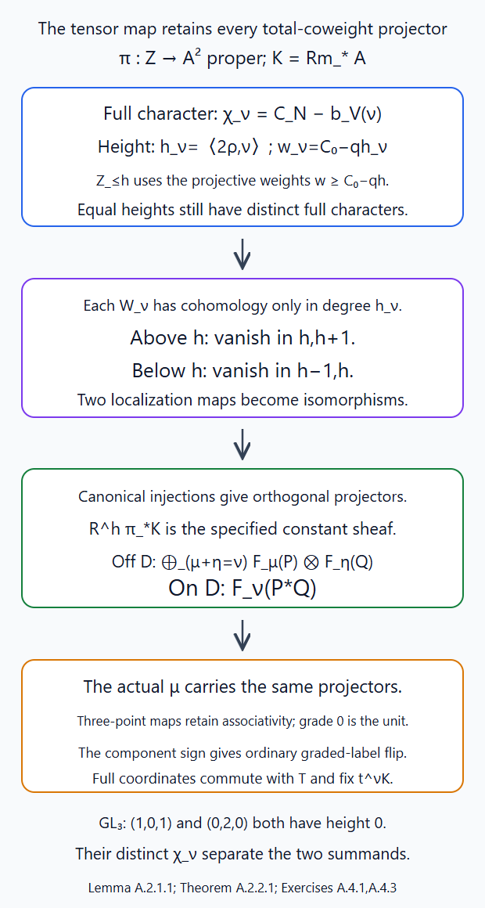
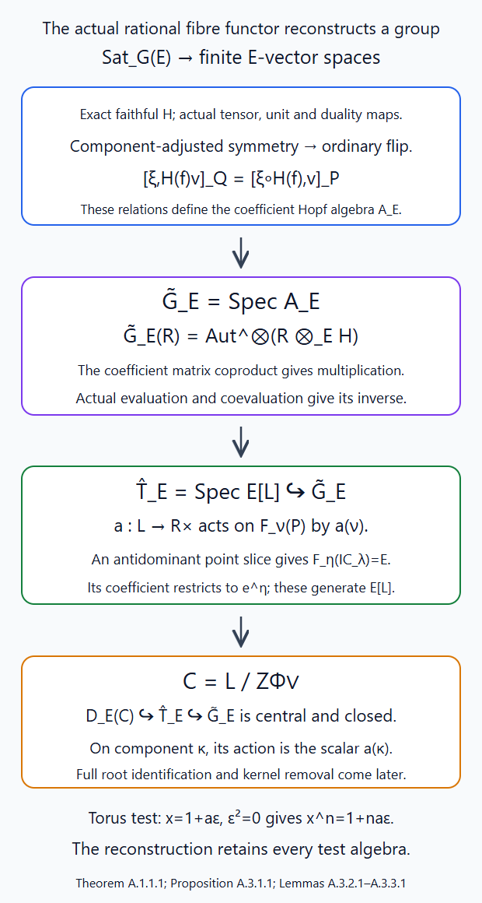
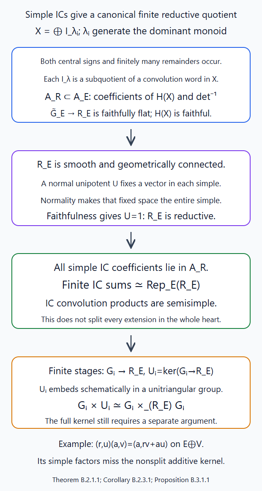
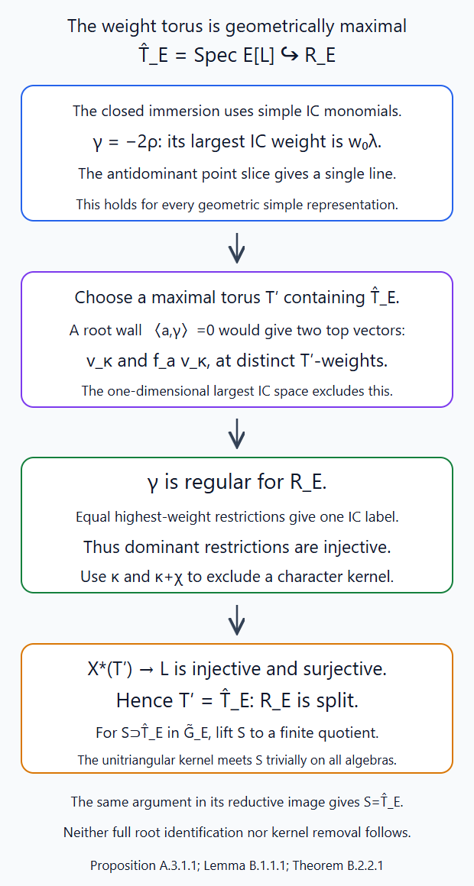

The fibre functor and the Tannakian group
Written by GPT-6.1 Sol (OpenAI), October 2026. Public domain (CC0).
Global cohomology turns convolution of perverse sheaves into a tensor product of vector spaces. The sign-adjusted fusion symmetry makes this an ordinary symmetric fibre functor. We first establish that conclusion without any semisimplicity assumption, and distinguish reconstruction from the additional geometric arguments needed to identify the group.
Sections 1–10 work in the classical sheaf setting: \(G\) is a connected complex reductive group, and \(\Lambda\) is any characteristic-zero field. The category \(\operatorname{Sat}_G(\Lambda)\) consists of finite-support \(L^+G\)-equivariant perverse sheaves on \(\operatorname{Gr}_G\), with the conventions of Lesson 6. Put \(L=X_*(T)\), \(d_\lambda=\langle2\rho,\lambda\rangle\), and \[ F_\nu(P)=H_c^{\langle2\rho,\nu\rangle}(S_\nu,P),\qquad H(P)=\bigoplus_i H^i(\operatorname{Gr}_G,P). \tag{1.1} \] All these spaces are finite dimensional. Ordinary cohomology retains its grading during the constructions, and is then regarded as an ungraded vector space for the fibre functor.
1. Exactness and faithfulness without semisimplicity
Lesson 5, Theorem 17.1 and §18 proves a canonical natural decomposition \[ H(P)=\bigoplus_{\nu\in L}F_\nu(P), \qquad F_\nu(P)\text{ has degree }\langle2\rho,\nu\rangle. \tag{1.2} \] It constructs the maps through two localization triangles with a two-degree gap; a degeneration assertion alone would not give this decomposition. Each summand is exact, and only finitely many are nonzero on a fixed support. Thus \(H\) is exact.
For faithfulness we reproduce the detection argument of Lesson 6, §6. The simple objects are \(IC_\lambda\), by its Theorem 3.2. For \(\nu=w_0\lambda\), the semi-infinite dimension calculation gives \(\dim(S_\nu\cap Z_\lambda)=\langle\rho,\lambda+w_0\lambda\rangle=0\). The intersection contains \(t^\nu\) in the open orbit. Its reduced finite set has no other point: a regular dominant cocharacter contracts every point in it to \(t^\nu\), and a connected multiplicative-group orbit in a finite set is constant. The IC restricts there to \(\Lambda[d_\lambda]\). Consequently \[ F_{w_0\lambda}(IC_\lambda)=\Lambda, \qquad H^{-d_\lambda}(IC_\lambda)=\Lambda. \tag{1.3} \] For the second equality, any nonzero \(F_\eta(IC_\lambda)\) has \(S_\eta\cap Z_\lambda\ne\varnothing\). Cocharacter contraction puts \(t^\eta\) in that closed support, so the orbit-closure theorem of Lesson 4 gives \(\eta^+\le\lambda\). The minimum of \(\langle2\rho,\eta\rangle\) among such coweights is \(-d_\lambda\), attained only at \(w_0\lambda\): taking the antidominant member of a Weyl orbit minimizes the pairing, and every nonzero sum of positive simple coroots increases \(\langle2\rho,-\rangle\) strictly. Thus no other summand of (1.2) occurs in that degree.
Every nonzero object has a simple subobject, by finite length. Exactness therefore injects a nonzero space (1.3) into its cohomology. For a nonzero morphism \(f\), its image is a nonzero object; exactness identifies \(H(\operatorname{im}f)\) with the image of \(H(f)\). Hence \(H(f)\ne0\). This proves faithfulness on morphisms, rather than just nonvanishing on objects. No IC stalk-parity or semisimplicity assertion was used.
2. The strong symmetric tensor structure
Lesson 7, §9 constructs natural isomorphisms \[ \theta_{P,Q}:H(P*Q)\xrightarrow{\sim}H(P)\otimes_\Lambda H(Q). \tag{2.1} \] Here is why this is a strong tensor structure. The bounded two-point moving chain is proper over \(\mathbb A^2\). Its descended coefficient complex has locally constant proper direct-image cohomology on the whole base, including the diagonal. Off that diagonal it is the product of the two bounded supports with \(P\boxtimes Q\); on it the fibre is the twisted convolution source. Proper composition compares its diagonal cohomology with that of \(P*Q\). Canonical parallel transport on the contractible base and field Künneth give (2.1). Larger supports and frame levels restrict the same maps, so this is independent of their choices.
The three-point family makes both iterated comparisons the transport of one threefold Künneth map. It proves compatibility with the convolution associator. The unit family gives \(H(\mathbf1)=\Lambda\) and the unit compatibilities. The rigidity maps and both duality triangles are proved in Lesson 7, §8.
For an object in component \(\kappa\), its cohomology has the one parity \[ \epsilon(\kappa)=\langle2\rho,\lambda\rangle\pmod2 \] for any orbit index \(\lambda\) in that component. This is well defined because coroot differences pair evenly with \(2\rho\). The fusion interchange acts through the graded Koszul rule on cohomology. Lesson 8, §7 defines \[ c'_{P,Q}=(-1)^{\epsilon(P)\epsilon(Q)}c_{P,Q} \tag{2.2} \] on the component pieces and proves its coherent symmetric constraints. Every degree of \(P\) has parity \(\epsilon(P)\), and every degree of \(Q\) has parity \(\epsilon(Q)\). Thus the scalar in (2.2) cancels the Koszul sign on each tensor summand. Under (2.1), \(H(c'_{P,Q})\) is the ordinary interchange of ungraded vector spaces.
Theorem 2.1. The functor \(H\), equipped with (2.1), is an exact faithful \(\Lambda\)-linear strong symmetric monoidal functor \[ (\operatorname{Sat}_G(\Lambda),*,c') \longrightarrow\operatorname{Vect}^{\mathrm{fd}}_\Lambda. \] In particular it is a neutral fibre functor. The proof uses the ordinary cohomology parity of components, not a general parity theorem for IC stalks.
3. Reconstruction on all coefficient algebras
The Satake category is an essentially small \(\Lambda\)-linear abelian category. It is rigid by Lesson 7, and \(\operatorname{End}(\mathbf1)=\Lambda\), since the unit is the one-point constant sheaf. Theorem 2.1 therefore satisfies every hypothesis of Lesson 9, §§1–5. Its proved reconstruction gives an affine group scheme \(\widetilde G\) over \(\Lambda\), a symmetric tensor equivalence \[ \operatorname{Sat}_G(\Lambda) \simeq\operatorname{Rep}^{\mathrm{fd}}_\Lambda(\widetilde G), \tag{3.1} \] and, for every commutative \(\Lambda\)-algebra \(R\), \[ \widetilde G(R)=\operatorname{Aut}^{\otimes}(R\otimes_\Lambda H). \tag{3.2} \] This includes nilpotent test algebras. The coordinate functions are the coefficient classes \([\xi,v]_P\), their product is the coefficient of \(P*Q\), and duality gives their antipode. Thus (3.1) is a scheme-theoretic reconstruction.
An affine reconstructed group is not automatically an algebraic or reductive group. The additional tests are precise: a tensor generator makes it finite type by Lesson 9, Theorem 6.1; for a connected group in characteristic zero, semisimplicity makes it pro-reductive by its Theorem 10.1. Finite type is needed to replace that last conclusion by reductivity of an algebraic group. These hypotheses must be proved separately in the geometric category.
4. The torus case in full
Let \(G=T\) be a complex torus, with coweight lattice \(L\). Its reduced Grassmannian is the discrete set \(L\), as proved in Lesson 2. The full functor has nilpotent directions, but the classical constructible category has the same underlying topological space; those directions introduce no new classical perverse objects. Positive loop equivariance is unique, since the relevant jet groups are connected. Thus an object is a finitely supported family \((V_\ell)_{\ell\in L}\) of finite-dimensional vector spaces, each in perverse degree zero.
Convolution adds the lattice labels, by Lesson 8, §8: \[ (V*W)_\nu=\bigoplus_{\ell+m=\nu}V_\ell\otimes W_m. \tag{4.1} \] Here \(\rho=0\), so the modified symmetry is ordinary interchange. The cohomology fibre functor is \(\bigoplus_\ell V_\ell\). Formula (4.1) is a tensor grading, not merely a decomposition of the dimensions.
For any test algebra \(R\), naturality makes a tensor automorphism scalar \(a_\ell\in R^\times\) on grade \(\ell\). The conditions are \(a_0=1\) and \(a_{\ell+m}=a_\ell a_m\). Thus \[ \operatorname{Aut}^{\otimes}(R\otimes H) =\operatorname{Hom}_{\mathrm{groups}}(L,R^\times) =\operatorname{Hom}_{\Lambda\text{-alg}}(\Lambda[L],R). \] The recovered group is the dual torus \[ \widehat T=\operatorname{Spec}\Lambda[L],\qquad X^*(\widehat T)=L. \tag{4.2} \] The coaction on \(v\in V_\ell\) is \(v\mapsto v\otimes e^\ell\). Expanding any finite comodule into the group-algebra basis gives mutually orthogonal grade projectors by the same coassociativity calculation as Lesson 9, §9.1. This proves the whole equivalence \(\operatorname{Sat}_T=\operatorname{Rep}(\widehat T)\), including morphisms, tensor products and every test algebra.
5. Canonical weight summands through fusion
The ordinary graded tensor comparison does not on its own prove that it preserves the finer coweight decomposition (1.2). We construct its actual weight summands in the moving family.
First let \(P,Q\) have supports in single components. Use the proper two-point chain of Lessons 7–8 over \(B=\mathbb A^2\), with endpoint map \(m\) and coefficient complex \(\mathcal A\). Put \[ K=Rm_*\mathcal A=\mathcal F_2[-2]. \tag{5.1} \] Its fibre on the diagonal is \(P*Q\), and off it is \(P\boxtimes Q\). The shift removes the base normalization of the perverse fusion complex.
5.1. A projective family and its precise weights
Choose a faithful representation \(V\) of \(G\), with weights \(\beta\) of multiplicities \(m_\beta\). The bounded-target construction of Lesson 8, §1, embeds the moving target locally closed in a finite lattice Grassmannian. The closed reduced proper image of the moving chain in that Grassmannian is a projective \(T\)-stable family \(Z\to B\), containing the support of \(K\). This uses the proper supported image, without requiring the entire moving Grassmannian to be projective.
For \(f=(t-a)(t-b)\), the finite ambient module \(f^{-N}V[t]/f^NV[t]\) is free over \(B\), by the polynomial basis of the monic \(f^{2N}\). On our component-homogeneous support the rank of \(M/f^NV[t]\) is constant: the determinant character pairs only with the component class. Its Plücker embedding is therefore \(Z\hookrightarrow\mathbb P(W\otimes\mathcal O_B)\) for one constant finite-dimensional \(T\)-representation \(W\).
Define the rational linear map \[ b_V(\nu)=\sum_\beta m_\beta\langle\beta,\nu\rangle\beta. \] At a fixed modification with total coweight \(\nu\), the Plücker character is \[ \chi_\nu=C_N-b_V(\nu),\qquad C_N=2N\sum_\beta m_\beta\beta. \tag{5.2} \] Indeed the \(\beta\)-part of \(M/f^NV[t]\) has rank \(m_\beta(2N-\langle\beta,\nu\rangle)\). Off the diagonal \(\nu=\mu+\eta\); at the collision the powers of \(t-a\) add, giving exactly the same formula.
Faithfulness makes the weights span \(X^*(T)_\mathbb Q\). Hence \(\langle b_V(\nu),\nu\rangle=\sum_\beta m_\beta\langle\beta,\nu\rangle^2\) is positive definite, so \(b_V\) is injective. It is Weyl invariant. Reflection in a simple root shows \(b_V(\alpha^\vee)=c_\alpha\alpha\): the reflection's negative eigenspace is the line spanned by \(\alpha\). Positivity gives \(c_\alpha>0\). Choose a positive integer \(q\) clearing denominators so that \[ \zeta=q\,b_V^{-1}(2\rho)\in X_*(T). \] It is regular dominant, since \(c_\alpha\langle\alpha,\zeta\rangle=q\langle2\rho,\alpha^\vee\rangle>0\). For a torus the conclusion is already §4. The \(\zeta\)-weight of (5.2) is \[ w_\nu=C_0-qh_\nu,\qquad C_0=\langle C_N,\zeta\rangle,\quad h_\nu=\langle2\rho,\nu\rangle. \tag{5.3} \] The contraction proof of Lesson 5, §11, applies to any regular dominant cocharacter. Its fibrewise attractors are the semi-infinite orbits, or their products off the diagonal.
5.2. Closed height cuts and equal-height labels
Decompose \(W\) into \(\zeta\)-weight spaces and define the closed cut \[ Z_{\le h}=Z\cap\mathbb P\left( \bigoplus_{w\ge C_0-qh}W_w\otimes\mathcal O_B\right). \tag{5.4} \] The attracting limit is the lowest occupied projective weight. Thus a fibre of (5.4) is exactly the union of attracting pieces of total height at most \(h\). Set \(U_{\ge h}=Z\setminus Z_{<h}\) and \(Z_h=Z_{\le h}\setminus Z_{<h}\).
On \(Z_h\), projection to the lowest-weight coordinates is the relative attracting-limit map. Its image lies in the finite union of the full \(T\)-character spaces \(\mathbb P(W_{\chi_\nu})\) with \(h_\nu=h\). Regularity ensures that its fixed modifications are \(T\)-fixed; their reduced analytic loci have the coweight description of Lesson 5. Distinct total coweights have distinct characters by injectivity of \(b_V\). These character projective spaces are disjoint. Pulling them back gives an open-and-closed decomposition \[ Z_h=\coprod_{h_\nu=h} Z_\nu^+. \tag{5.5} \] Different pairs \((\mu,\eta)\) can meet when the points collide and \(\mu+\eta=\nu\); they cannot meet a different total label, even if its height agrees. This separates the summands that the ordinary cohomological degree alone cannot separate. No identification of nilpotent fixed-point functors with discrete coweights is being made; these are the classical analytic loci supporting the sheaves.
5.3. Two localization maps give the canonical comparison
Write \(\pi:Z\to B\) and \[ \mathscr W_\nu=R(\pi|_{Z_\nu^+})_!(K|_{Z_\nu^+}). \] The arbitrary proper-support base-change proof in Constructible complexes, H.2–H.4 identifies each fibre with compact cohomology. Lesson 5's concentration theorem and compact-support Künneth give \[ \mathcal H^k(\mathscr W_\nu)=0\quad(k\ne h_\nu). \tag{5.6} \] At a distinct pair its surviving fibre is \(\bigoplus_{\mu+\eta=\nu}F_\mu(P)\otimes F_\eta(Q)\); at a collision it is \(F_\nu(P*Q)\).
All the heights have one parity on these component-homogeneous supports. A finite closed-open induction using (5.6) makes the upper union \(U_{>h}\) have no relative compact cohomology in degrees \(h,h+1\), and the lower union \(Z_{<h}\) have none in \(h-1,h\). These are sheaf vanishings because they hold on every fibre by base change. The two localization triangles consequently make both maps isomorphisms: \[ \begin{aligned} \mathcal H^hR(\pi|_{U_{\ge h}})_!K &\xrightarrow{\sim}\bigoplus_{h_\nu=h}\mathcal H^h\mathscr W_\nu,\\ \mathcal H^hR(\pi|_{U_{\ge h}})_!K &\xrightarrow{\sim}R^h\pi_*K. \end{aligned} \tag{5.7} \] Properness of \(\pi\) identifies its ordinary and compact direct images. Invert the first map and compose with the second. This gives actual canonical summand maps in \(R^h\pi_*K\), rather than choosing a split of an associated-graded filtration.
The proper-family proof of Lesson 7, §9, makes \(R^h\pi_*K\) a local system on all \(B\). Each summand of (5.7) is therefore a local system: its projector is an idempotent endomorphism of a locally constant finite-dimensional sheaf. Transport on the contractible \(B\) preserves these summands. Its diagonal-to-distinct comparison is \[ F_\nu(P*Q)\xrightarrow{\sim} \bigoplus_{\mu+\eta=\nu}F_\mu(P)\otimes F_\eta(Q). \tag{5.8} \]

The schematic records the maps in (5.4)–(5.8). Equal-height total labels remain separate because their full Plücker characters differ. Within one total label, the off-diagonal tensor sum and the diagonal convolution weight are fibres of the same local-system summand. The two-degree gaps above and below the layer make its localization maps invertible. The SVG preserves these labels and equations; it is a diagram of the comparison, not a plot of the varieties.
5.4. Agreement, associativity and symmetry
At a distinct fibre, (5.7) agrees with the product of the canonical injections in Lesson 5, §18. To verify this, take the product of its two individual upper opens. It lies in the upper open for the sum height. Its intersection with the sum-height layer is the product of their individual height layers. Künneth commutes with restriction and extension by zero in this diagram; both inverted restrictions are isomorphisms. The injection of a \((\mu,\eta)\)-piece is therefore exactly the tensor product of the two earlier injections. Thus (5.8) is the restriction of the chosen map (2.1).
Repeat over \(\mathbb A^3\), replacing \(2N\) by \(3N\) in (5.2). On partial diagonals concentration follows from perverse convolution and Lesson 8, equation (3.7). Both binary comparisons transport the same total-coweight summands of the three-point local system; hence they respect the associator. The zero-modification family gives the unit. Permutation preserves the cuts and total labels. Its Koszul sign \((-1)^{h_\mu h_\eta}\) is cancelled by the component sign (2.2), so the comparison respects ordinary interchange in \(L\)-graded vector spaces.
Finite direct sums over components give arbitrary \(P,Q\). Larger bounds restrict the same intrinsic attracting loci and localization maps. Different faithful representations produce the same height and total-coweight loci. Thus no such choice changes the comparison. This proves (6.1), with all its tensor and symmetric coherence, without semisimplicity.
6. From the tensor grading to a closed dual torus
Section 5 proves that the canonical tensor comparison respects (1.2), in the precise form \[ F_\nu(P*Q)\simeq\bigoplus_{\mu+\eta=\nu}F_\mu(P)\otimes F_\eta(Q). \tag{6.1} \] Thus the grading gives a symmetric tensor functor to \(L\)-graded vector spaces. Their grading automorphisms, computed in §4, act on the fibre functor; hence they give a homomorphism \[ \iota:\widehat T=\operatorname{Spec}\Lambda[L] \longrightarrow\widetilde G. \tag{6.2} \] On a test algebra \(R\), a character \(a:L\to R^\times\) acts by the scalar \(a(\nu)\) on \(R\otimes F_\nu(P)\). Equation (6.1) proves tensor compatibility and the unit condition, so (3.2) makes this a group-scheme morphism.
Proposition 6.1. Under (6.1), the morphism (6.2) is a closed immersion, with \(X^*(\widehat T)=L\).
Proof. For every antidominant \(\eta\), put \(\lambda=w_0\eta\). Equation (1.3) supplies \(F_\eta(IC_\lambda)=\Lambda\). Choose a nonzero vector \(v\) in this weight space and a linear functional \(\xi\) on \(H(IC_\lambda)\) taking value 1 on \(v\) and zero on its other weight pieces. Pullback of the reconstructed coefficient \([\xi,v]_{IC_\lambda}\) is exactly \(e^\eta\in\Lambda[L]\), by the test-algebra formula above. Thus every antidominant monomial belongs to the image of \[ \iota^*: \Lambda[\widetilde G]\longrightarrow\Lambda[L]. \] The antidominant cone generates \(L\) as a group. Indeed choose an integral regular antidominant coweight \(\delta\) in the coroot lattice, for example minus the sum of positive coroots. For any \(\nu\in L\), both \(M\delta\) and \(\nu+M\delta\) are antidominant for sufficiently large \(M\). Their difference is \(\nu\). For a torus all coweights are already antidominant and the same conclusion holds without choosing \(\delta\). The image of a Hopf map is closed under its antipode, so it contains inverse monomials as well as products. It therefore contains every \(e^\nu\), which proves surjectivity of \(\iota^*\). This is precisely the closed-immersion criterion for affine schemes, over all test algebras. The group-algebra grading calculation gives its character lattice. \(\square\)
This proof needs no assertion that every possible Weyl-extremal IC weight has already been computed. The antidominant calculation and the group structure suffice.
7. Connectedness and geometric maximality
7.1. Finite quotients are trivial
Theorem 7.1. The affine group \(\widetilde G\) of (3.1) is geometrically connected. This does not require semisimplicity of the Satake category.
Proof. Let \(\widetilde G\twoheadrightarrow Q\) be a faithfully flat finite quotient. The Cartier theorem, AG-GS-02, Theorem 4.3 makes \(Q\) finite étale. Its representations are semisimple even over a coefficient field that is not algebraically closed. Indeed choose a finite separable splitting field \(E/\Lambda\), so that \(Q_E\) is a finite constant group. Average a linear section of any representation surjection over that finite group, dividing by its order in characteristic zero. The equations saying that a map is a section and a comodule morphism are finitely many linear equations over \(\Lambda\). Row reduction shows that a system solvable over \(E\) is already solvable over \(\Lambda\). Thus the section exists over \(\Lambda\).
By Lesson 9, Theorem 8.1, inflation is fully faithful and its image is closed under subobjects and subquotients. Each simple \(Q\)-representation therefore becomes a simple Satake object \(IC_\lambda\). If \(\lambda\ne0\), Lesson 7, §§5–6 gives a composition factor \(IC_{n\lambda}\) of \(IC_\lambda^{*n}\) for every \(n\ge1\). Induction uses exactness of convolution and its multiplicity-one highest constituent. These are distinct simples because the coweight lattice is torsion-free. They all belong to the inflated \(Q\)-category.
A finite group scheme has only finitely many simple representations. Its finite-dimensional regular comodule is an additive generator by Lesson 9, Theorem 6.2; in the semisimple category every simple must be a constituent of that one finite object. The infinite family above is impossible. Thus every simple of \(Q\) inflates to \(IC_0=\mathbf1\). Full faithfulness identifies it with the trivial representation, so semisimplicity makes the regular comodule trivial. For \(b\in\Lambda[Q]\), this says \(\Delta(b)=b\otimes1\). Applying \(\epsilon\otimes1\) gives \(b=\epsilon(b)1\). Hence \(Q=1\).
Write \(\Lambda[\widetilde G]=\bigcup_i B_i\) as in Lesson 9, Lemma 7.1. The maps \(\widetilde G\to G_i=\operatorname{Spec}B_i\) are faithfully flat. The component quotient theorem, AG-GS-03, Theorem 3.1 gives a faithfully flat finite étale quotient \(G_i\to\pi_0(G_i)\), with geometrically connected fibres. Its composite with \(\widetilde G\to G_i\) must be trivial, so every \(G_i\) is geometrically connected. After any field extension \(K/\Lambda\), an idempotent in \(\Lambda[\widetilde G]\otimes K=\bigcup_i(B_i\otimes K)\) occurs in one stage. It is therefore 0 or 1. The affine scheme is geometrically connected. \(\square\)
7.2. Simple representations remain simple after coefficient extension
For \(X=IC_\lambda\), every subobject of a finite sum of copies of \(X\) is a sum of copies of \(X\), and \(\operatorname{End}(X)=\Lambda\), by Lesson 6, Theorem 3.2. This elementary semisimple-object assertion concerns only that finite sum: a maximal sum of simple subobjects disjoint from a given subobject is its complement, by finite length. It assumes no semisimplicity of other objects.
Consequently its subobjects are \(X\otimes U\), for subspaces \(U\subset\Lambda^n\). In the finite-algebra construction of Lesson 9, every linear endomorphism of \(H(X)\) preserves \(H(X)\otimes U\). Thus \(A_X=\operatorname{End}_\Lambda(H(X))\). Its dual matrix coalgebra embeds in \(\Lambda[\widetilde G]\), and after any field extension remains the dual of a full matrix algebra. Its standard comodule is irreducible, since matrix units carry any nonzero vector to every basis vector. Hence \(IC_\lambda\)'s reconstructed representation is absolutely simple.
Conversely every simple representation over \(\overline\Lambda\) descends to a finite extension \(E/\Lambda\): include the finitely many algebraic coefficients of its coaction matrix in that extension. Restriction of scalars gives a finite representation over \(\Lambda\). Its composition factors are the \(IC_\lambda\). After extension to \(\overline\Lambda\) they remain simple, by the preceding paragraph. Since \(E/\Lambda\) is separable, restriction followed by extension is the direct sum over its embeddings, and includes the original simple as a summand. That simple is therefore one of the \(IC_{\lambda,\overline\Lambda}\). This proves that these are exactly the geometric simples, including their unique labels.
7.3. No larger torus contains the weight torus
Theorem 7.2. The closed torus (6.2) is geometrically maximal in \(\widetilde G\). No finite-type or Satake semisimplicity assumption is needed.
Proof. Work over \(\overline\Lambda\). Let \(S\subset\widetilde G\) be a closed torus containing \(\widehat T\). Lift finite coordinate generators of \(S\) to \(\overline\Lambda[\widetilde G]\), and include them in a finitely generated Hopf subalgebra. Then \(S\) embeds in a finite-type quotient \(G_i\). This quotient is smooth by Cartier's theorem and connected by Theorem 7.1.
Choose a faithful finite representation \(V\) of \(G_i\), using the coefficient-generator construction of Lesson 9, Theorem 6.1. Let \(R\) be the schematic image of its action on the direct sum \(W\) of the composition factors of \(V\). The kernel acts unitriangularly on a composition-series basis of \(V\). Its intersection with \(S\) is trivial: it is both diagonalizable and a subgroup of a unitriangular group, and AG-RG-01, Lemma 2.A proves that such a subgroup is trivial, on all test algebras. Thus \(S\to R\) is a monomorphism and a closed immersion by AG-GS-03, Theorem 5.9.
The group \(R\) is connected, smooth and reductive. Its quotient map from \(G_i\) is faithfully flat by the Hopf-inclusion lemma. Each summand of \(W\) is a simple \(R\)-module, and \(W\) is faithful. Every smooth connected normal unipotent subgroup of \(R\) has a nonzero fixed vector in each summand by the same Lemma 2.A. Normality makes the fixed subspace \(R\)-stable, so it is the whole simple summand. Faithfulness forces that subgroup to be trivial, which is reductivity.
Take a maximal torus \(T_R\supset S\), whose existence is proved in AG-RG-01, §2. The cocharacter \(\gamma=-2\rho\) of \(\widehat T\) has a one-dimensional largest weight space on every simple representation: §1 proves it is \(F_{w_0\lambda}(IC_\lambda)\), of weight \(w_0\lambda\). Choose positive roots of \(R\) so that \(\gamma\) lies in their closed dominant chamber. It lies in the interior. Otherwise a simple root \(a\) has \(\langle a,\gamma\rangle=0\); choose a strictly dominant integral highest weight \(\kappa\). The corresponding irreducible representation has nonzero vectors \(v_\kappa\) and \(f_a v_\kappa\), of distinct \(T_R\)-weights but the same largest \(\gamma\)-weight. This contradicts that one-dimensional space. The ordinary highest-weight modules and their rank-one lowering strings are proved in AG-RG-S06, §7 and integrated to the algebraic group in AG-RG-05, §6 and Theorem 10.1; their use is independent of Satake semisimplicity.
Now the largest \(\gamma\)-line of the simple \(R\)-module of highest weight \(\kappa\) has \(\widehat T\)-weight \(\kappa|_{\widehat T}\). Two dominant weights with the same restriction would inflate to geometric simples with the same \(IC_\lambda\) label, by §7.2 and their largest-weight line. Full faithfulness of inflation makes the two \(R\)-modules isomorphic, so their highest weights coincide.
If a nonzero character \(\chi\) lay in the kernel of \(X^*(T_R)\to X^*(\widehat T)\), choose a sufficiently large strictly dominant integral \(\kappa\) so that both \(\kappa\) and \(\kappa+\chi\) are dominant. They have the same restriction, a contradiction. For a torus \(R\), all characters are dominant and the argument uses \(0,\chi\). Thus restriction is injective. It is also surjective because \(\widehat T\) is a closed subtorus. Hence \(T_R=\widehat T\), and \(S=\widehat T\). This proves geometric maximality. \(\square\)
8. Two computed cohomology representations
8.1. The standard minuscule object for \(GL_n\)
For \(\lambda=(1,0,\ldots,0)\), the Schubert variety is \(\mathbb P^{n-1}\), and its IC is \(\Lambda_{\mathbb P^{n-1}}[n-1]\). The standard coordinate Schubert cells for the chosen upper-triangular Borel have dimensions \(n-i\), indexed by \(\nu=e_i\), \(1\le i\le n\). They are exactly the semi-infinite intersections on this minuscule variety, by its lattice description in Lesson 4. Compact cohomology of \(\mathbb A^{n-i}\) with the normalized shift is one dimensional in degree \[ 2(n-i)-(n-1)=n+1-2i=\langle2\rho,e_i\rangle. \] Thus \[ F_{e_i}(IC_\lambda)=\Lambda\quad(1\le i\le n), \qquad F_\nu(IC_\lambda)=0\text{ for other }\nu. \tag{8.1} \] The total dimension is \(n\). Under (6.2), its torus characters are the standard coordinate characters. This determines its restriction to the dual torus; identifying the whole reconstructed group with \(GL_n\) requires the dual-group identification.
8.2. The first nontrivial \(SL_2\) object
For \(SL_2\), take \(\lambda=\alpha^\vee\), so \(d_\lambda=2\). The projective Schubert surface is the quadratic-cone surface of Lesson 6, §§7.2–7.4. The characteristic-zero link calculation there proves \(IC_\lambda=\Lambda_{Z_\lambda}[2]\). Its three semi-infinite intersections are \(\mathbb A^2\), \(\mathbb A^1\), and a point, indexed by \(\alpha^\vee,0,-\alpha^\vee\), respectively. The middle affine line includes the vertex; on the open orbit alone its intersection is punctured, which would give a different compact-cohomology answer.
Consequently \[ F_{\alpha^\vee}(IC_\lambda)=F_0(IC_\lambda) =F_{-\alpha^\vee}(IC_\lambda)=\Lambda, \tag{8.2} \] in degrees \(2,0,-2\). All other weights vanish. Total cohomology has dimension three, and its dual-torus weights form the three-term rank-one string. The full-support normalization and the contribution at the vertex are essential to the middle weight.
9. A finite reductive quotient and the remaining kernel
The simple IC objects determine a connected reductive algebraic quotient even before semisimplicity of the whole perverse heart is known. This also proves semisimplicity of their convolution products. Arbitrary extensions require a further argument.
9.1. Finitely many generators carry every simple
The monoid \(L^+\) of dominant coweights is finitely generated. Here is a direct lattice proof. Its lineality lattice \(L_0\), killed by all simple roots, is saturated; choose a basis \(z_j\). Choose dominant integral \(v_i\) whose simple-root pairings are positive on root \(i\) and zero on the others, by clearing denominators of fundamental coweights in \(L_\mathbb Q/L_{0,\mathbb Q}\). The \(v_i,z_j\) form a real basis. A dominant lattice point has nonnegative \(v_i\)-coordinates. Subtract their integer parts and the integer parts of its \(z_j\)-coordinates. Its remainder is a lattice point of a bounded fundamental parallelepiped, hence belongs to a finite set; all such remainders are dominant. The \(v_i\), these remainders, and both signs of the \(z_j\) generate \(L^+\) as a monoid.
Choose these generators \(\lambda_1,\ldots,\lambda_s\), and put \(X=\bigoplus_i IC_{\lambda_i}\). Lesson 7's highest-constituent theorem makes every \(IC_\lambda\) a subquotient of a convolution word in \(X\). Explicitly, write \(\lambda=\sum_i n_i\lambda_i\); repeated application of that theorem supplies \(IC_\lambda\) as a constituent of the corresponding word. Exactness of convolution preserves the required subquotients.
Put \(A=\mathcal O(\widetilde G)\). The matrix coefficients of \(H(X)\), together with the inverse determinant, generate a finitely generated Hopf subalgebra \(A_R\subset A\). The matrix coproduct, counit and inverse-matrix formulas prove that it is a Hopf subalgebra. Thus \[ q:\widetilde G\longrightarrow R=\operatorname{Spec}A_R, \qquad R\hookrightarrow GL(H(X)) \tag{9.1} \] are respectively faithfully flat and a closed immersion: these are the Hopf-inclusion and coefficient-generation proofs of Lesson 9, §§6–8. In particular \(H(X)\) is a faithful \(R\)-representation. Geometric connectedness follows from §7.1, since \(R\) is a finite-type quotient. The proved characteristic-zero Cartier theorem, used there, makes it smooth.
Each summand \(H(IC_{\lambda_i})\) is absolutely simple as an \(R\)-module. Indeed inflation is fully faithful and its image is closed under subobjects, by Lesson 9, Theorem 8.1; §7.2 proves absolute simplicity for the original \(\widetilde G\)-modules. Work over an algebraic closure and let \(U\) be a smooth connected normal unipotent subgroup of \(R\). Triangularization puts \(U\) in a unitriangular group. The fully proved AG-RG-01, Lemma 2.A then gives a nonzero \(U\)-fixed vector in each simple summand. Normality makes the fixed subspace \(R\)-stable, so it is the whole summand. Faithfulness of \(H(X)\) forces \(U=1\). This is the defining reductivity criterion for a smooth connected affine group. Hence \(R\) is geometrically reductive, and is a connected reductive algebraic group over \(\Lambda\).
Every convolution word in \(X\) is inflated from \(R\). Inflation is closed under subquotients, so every \(IC_\lambda\) is inflated from \(R\), without a semisimplicity assumption. Conversely every simple \(R\)-representation inflates to a simple \(\widetilde G\)-representation, hence to an \(IC_\lambda\). We have proved:
Theorem 9.1. There is a faithfully flat finite-type connected reductive quotient \(q:\widetilde G\to R\) through which every simple IC representation factors. Its simple representations are exactly the \(H(IC_\lambda)\).
This quotient is independent of the chosen dominant-monoid generators. Its coordinate algebra is exactly the Hopf subalgebra of \(A\) generated by the coefficients of all simple ICs: all those coefficients lie in \(A_R\), while the chosen generators themselves are among the ICs. This gives both inclusions of Hopf subalgebras.
9.2. The maximal torus and semisimple IC products
The composite \(\widehat T\to\widetilde G\to R\) is a closed immersion. To check the coordinate surjection, repeat §6 using the coefficients of simple ICs, which now lie in \(A_R\). Every antidominant \(\eta\) occurs as the one-dimensional weight \(F_\eta(IC_{w_0\eta})\), so its coefficient restricts to \(e^\eta\). Those coweights and their negatives generate \(L\), giving every Laurent monomial in \(\Lambda[L]\).
It is a geometrically maximal torus of \(R\). The proof in §7.3 applies directly to \(R\): all its simples have the one-dimensional largest \(\gamma=-2\rho\) line of (1.3). If a maximal torus containing \(\widehat T\) had a root vanishing on \(\gamma\), a strictly dominant ordinary highest-weight representation would have two distinct vectors of largest \(\gamma\)-weight, as proved there. Thus \(\gamma\) is regular. Restriction of dominant highest weights to \(\widehat T\) is injective because it determines the inflated IC label. Adding a sufficiently large dominant weight then proves injectivity on the full character lattice. The closed subtorus gives surjectivity, so the containing maximal torus equals \(\widehat T\). This proves maximality for the quotient itself; it does not infer it merely from maximality in \(\widetilde G\).
The finite-type direction of Lesson 9, Theorem 10.1 proves complete reducibility of every finite-dimensional \(R\)-representation over the given characteristic-zero field. Its Lie-algebra input is the actual Casimir and invariant-projection proof of AG-RG-S06, Theorem 4.2. To specify the group bridge, over an algebraic closure use the central isogeny from a central torus times the semisimple derived group proved in AG-RG-05, §10. Decompose an inclusion of modules into central-torus weight spaces. Weyl's theorem supplies a Lie-equivariant projection on each space; AG-GS-01, Lemma 5.21 makes its kernel and image stable under the connected derived group. The projections are therefore equivariant for both factors, and faithful flatness of their central isogeny detects \(R\)-equivariance. Finally the equations for an equivariant projection with specified restriction are finitely many linear coaction equations over \(\Lambda\). Consistency after field extension implies consistency over \(\Lambda\), by row reduction. This proves complete reducibility over the original field, independently of Satake semisimplicity.
In particular \(H(IC_\lambda)\otimes H(IC_\mu)\) is a semisimple \(R\)-module. Reconstruction (3.1) and full faithfulness of inflation identify its decomposition with an actual decomposition \[ IC_\lambda*IC_\mu \simeq\bigoplus_\nu IC_\nu^{\oplus m_{\lambda\mu}^{\nu}}, \qquad m_{\lambda\mu}^{\nu}\in\mathbb Z_{\ge0}, \tag{9.2} \] with finite support. Thus the full subcategory \(\mathcal S_G\) consisting of finite direct sums of ICs is closed under convolution, duals, subobjects and quotients, and \[ \mathcal S_G\simeq\operatorname{Rep}^{\mathrm{fd}}_\Lambda(R) \tag{9.3} \] is a symmetric tensor equivalence. This is an unconditional semisimple tensor subcategory. It does not assert that every perverse object is in \(\mathcal S_G\), or that an extension in the larger heart splits.
9.3. What the remaining kernel can do
Write \(A=\bigcup_i A_i\) as the filtered union of finitely generated Hopf subalgebras containing \(A_R\), and set \(G_i=\operatorname{Spec}A_i\). Lesson 9 proves all quotient and transition maps faithfully flat. The groups \(G_i\) are smooth and geometrically connected, as in §7.1. Let \[ U_i=\ker(G_i\longrightarrow R). \tag{9.4} \] Choose a faithful finite-dimensional \(G_i\)-module \(V_i\). A composition series has simple factors that inflate to simple \(\widetilde G\)-modules. Every such factor comes from \(R\), by Theorem 9.1. Consequently \(U_i\) acts trivially on each successive quotient of that series. A basis adapted to the series embeds \(U_i\), as a group scheme, in the upper unitriangular group of \(V_i\). This is a statement on every test algebra, since each trivial quotient action is a comodule identity. Cartier's theorem makes this finite-type closed kernel smooth. Thus all finite stages of \(\ker q\) are unipotent.
Faithful flatness gives the torsor identity \[ G_i\times U_i\simeq G_i\times_R G_i, \qquad (g,u)\longmapsto(g,gu). \tag{9.5} \] The map \(G_i\to R\) is faithfully flat and finitely presented: both coordinate algebras are finitely generated over a field. Each geometric fibre is nonempty and, after choosing a point, translation identifies it with the smooth group \(U_i\). The actual flat-fibre criterion of Smooth morphisms, Theorem 3.1 therefore makes this map smooth. Its infinitesimal lifting property makes its derivative at the identity surjective; the kernel is \(\operatorname{Lie}U_i\), by the dual-number calculation in AG-GS-02, §1.1. At a rational smooth point the tangent dimension equals the local dimension, by the proved Jacobian criterion and cotangent calculation in AG-CA-18, Theorem 2.1 and §3. Apply this after algebraic closure to the three groups at their identities. Smooth group components all have the identity component's dimension, since translation permutes them. The resulting exact sequence of tangent spaces therefore gives \[ \dim G_i=\dim R+\dim U_i. \tag{9.6} \] This proves the formula without assuming that the kernel vanishes or choosing a Levi section.
It follows that a bound \(\dim G_i\le\dim R\) for every such finite stage would force \(U_i=1\). Here is the last step explicitly. A zero-dimensional smooth finite-type group is finite étale. Over an algebraic closure every element of it has finite order. A unitriangular matrix of finite order in characteristic zero is the identity: on its first nonzero superdiagonal the equation \((1+N)^m=1\) reads \(mN=0\), which is impossible for nonzero \(N\). Thus this reduced finite group has only its identity point, and is the trivial group scheme; faithful field descent gives \(U_i=1\). The torsor identity then makes \(G_i\to R\) an isomorphism. Hence every \(A_i=A_R\), so \(\widetilde G=R\).
The common torus and the complete list of simple representations do not on their own imply that bound. For example, let a connected reductive group \(R_0\) act on a nonzero vector space \(V\), and form \(R_0\ltimes V_{\mathrm{add}}\). Every simple representation factors through \(R_0\): the normal additive group fixes a nonzero vector by Lemma 2.A, and normality makes its fixed space the whole simple. Its inflated simple tensor products are semisimple. Nevertheless the representation \[ (r,u)(a,v)=(a,rv+au) \quad\text{on }\Lambda\oplus V \tag{9.7} \] has a nonsplit exact sequence \(0\to V\to\Lambda\oplus V\to\Lambda\to0\). An invariant section would send \(1\) to \((1,v_0)\); translation by \((1,u)\) changes it to \((1,v_0+u)\), excluding such a section. The displayed formula respects multiplication \((r,u)(s,w)=(rs,u+rw)\), so this is an actual algebraic representation and an explicit extension obstruction.
9.4. When the quotient is the whole group
If the Satake heart is semisimple, every object is a finite sum of ICs. Then (9.3) is the entire equivalence (3.1), so \(A=A_R\), \(q\) is an isomorphism, and \(\widetilde G\) is finite type and reductive. Conversely if \(q\) is an isomorphism, complete reducibility of \(R\) makes the whole heart semisimple. Thus the remaining issue is precisely whether the unipotent kernel acts nontrivially on extensions.
The IC parity assertion (P) of Lesson 6, §5 implies semisimplicity by its proved Proposition 5.2. Its Proposition 5.3 gives another sufficient condition, \(\Delta_\lambda=IC_\lambda\) for all \(\lambda\); the boundary-kernel formula (5.11) there identifies the corresponding extension obstruction. Theorem 9.1 and (9.2)–(9.3) require neither condition.
Identifying the dual group, §§7–8 completes the argument: it identifies the quotient's dual root datum and full centre, uses the central component grading and IC self-extension vanishing to remove every finite-stage kernel, and proves \(\widetilde G=R\). This gives full classical semisimplicity, all standard-object equalities, and the stage dimension bound as consequences, without assuming general IC parity. Those later results are not inputs to the reconstruction or quotient construction here. General ordinary local IC parity is subsequently proved in that lesson, Theorem 8.4, by the geometric generator and wall-convolution arguments of Lesson06. Appendix A proves the finite-E rational fibre-functor, weight-tensor, closed dual-torus and central-component comparisons over every allowed algebraically closed base. The rational identification of the full root datum and removal of its full-group kernel require the subsequent argument.
10. Exercises and complete solutions
Exercise 10.1 (easy). Verify the full torus equivalence \(\operatorname{Sat}_T=\operatorname{Rep}(\widehat T)\), including tensor products and the fibre functor.
Solution. A perverse sheaf on the discrete reduced Grassmannian is a finite family \(V_\ell\) of vector spaces in degree zero. Connected jet groups give its unique equivariance. Modifications add the pair of labels \((\ell,m)\), so convolution is (4.1); there is no symmetry sign because \(\rho=0\). Define the coaction by \(v\mapsto v\otimes e^\ell\) on grade \(\ell\). Conversely expand a finite \(\Lambda[L]\)-coaction in the basis \(e^\ell\). Coassociativity makes its coefficient operators mutually orthogonal idempotents, and the counit makes their sum the identity. Their images give the finite grading. Morphisms preserve these projectors, tensor products add their labels, and ordinary interchange gives the symmetry. Forgetting the grading is the total-cohomology functor. On every algebra \(R\), its tensor automorphisms are homomorphisms \(L\to R^\times\), proving the scheme as well as the category equivalence.
Exercise 10.2 (easy). Compute the dimension and all dual-torus weights of the minuscule \(GL_n\) object \(IC_{(1,0,\ldots,0)}\).
Solution. Its support is \(\mathbb P^{n-1}\) and its complex is \(\Lambda[n-1]\). The semi-infinite slice indexed by \(e_i\) is \(\mathbb A^{n-i}\). Compact cohomology has its sole group in degree \(2(n-i)-(n-1)=n+1-2i=\langle2\rho,e_i\rangle\), of dimension one. No other slice occurs: contraction of a point in such a slice would give a torus-fixed coweight in this minuscule orbit, whose coweights are precisely the \(e_i\). Total cohomology is therefore \(n\)-dimensional and restricts to \(\widehat T\) as \(\bigoplus_i\Lambda_{e_i}\), with these degrees. This is the standard weight pattern; it does not by itself identify the whole reconstructed group.
Exercise 10.3 (medium). Prove that \(\widetilde G\) is geometrically connected without assuming Satake semisimplicity.
Solution. Any finite faithfully flat quotient \(Q\) is finite étale by the proved Cartier theorem. Averaging over a finite splitting extension gives equivariant sections; descent of their finite linear equations gives sections over \(\Lambda\). Thus \(\operatorname{Rep}(Q)\) is semisimple. Fully faithful inflation, with image closed under subobjects by Lesson 9, makes its simples simple Satake objects \(IC_\lambda\). For \(\lambda\ne0\), exact convolution and its highest constituent give distinct factors \(IC_{n\lambda}\) in all tensor powers. A finite group has only finitely many simples, since its regular comodule is a finite additive generator. This forces every simple to inflate to \(IC_0\), hence be trivial. The regular comodule is then trivial, so \(\Delta b=b\otimes1\), and the counit gives \(b=\epsilon(b)1\). Thus \(Q=1\). Every finite-type quotient of \(\widetilde G\) has such a finite étale component quotient, so is geometrically connected. Any idempotent of the full coordinate algebra after field extension belongs to a finite-type Hopf stage; that connected stage forces it to be 0 or 1. This proves geometric connectedness.
Exercise 10.4 (medium). Prove that the weight grading gives a closed immersion \(\widehat T\to\widetilde G\).
Solution. Section 5 proves that the canonical tensor and symmetry maps preserve total coweights. For \(a:L\to R^\times\), scalar action by \(a(\nu)\) on each weight space is therefore a tensor automorphism of \(R\otimes H\), giving (6.2). Every antidominant \(\eta\) occurs as the one-dimensional \(F_\eta(IC_{w_0\eta})\). A vector in that line and a functional taking it to 1 give a coefficient restricting to \(e^\eta\). Antidominant coweights generate \(L\): write \(\nu=(\nu+M\delta)-M\delta\) with both terms antidominant for a sufficiently large \(M\). The image of the Hopf coordinate map contains their monomials and antipodes, hence every \(e^\nu\). It surjects onto \(\Lambda[L]\), exactly the closed-immersion condition. This includes nilpotent test algebras.
Exercise 10.5 (hard). Prove that the weight torus is geometrically maximal before finite type and reductivity of \(\widetilde G\) are known.
Solution. Extend to \(\overline\Lambda\). Section 7.2 proves that its simples are exactly the absolutely simple \(IC_\lambda\), with their original labels. Any larger closed torus \(S\) embeds in a finite-type quotient \(G_i\), by lifting its finite coordinate generators to a finite Hopf subalgebra. This quotient is smooth and connected. For a faithful representation, let \(R\) be its image on the sum of composition factors. Its kernel is unitriangular. A diagonalizable subgroup of a unitriangular group is trivial by the proved AG-RG-01 Lemma 2.A, so \(S\) embeds in \(R\). A normal unipotent subgroup of \(R\) fixes a nonzero vector in each simple summand, hence each whole summand by normality. Faithfulness makes it trivial, so \(R\) is reductive.
Take a maximal torus \(T_R\supset S\). The cocharacter \(\gamma=-2\rho\) has a one-dimensional highest space on every simple, of weight \(w_0\lambda\), by (1.3). Choose a positive system with \(\gamma\) dominant. If it vanished on a simple root, a strictly dominant highest-weight representation of \(R\) would have its highest vector and a nonzero first lowering vector in the same highest \(\gamma\)-space, a contradiction. Thus \(\gamma\) is regular. Two dominant highest weights of \(R\) with the same restriction to \(\widehat T\) inflate to the same \(IC_\lambda\); full faithfulness makes them equal. A nonzero character in the lattice kernel would be a difference of two dominant weights after adding a sufficiently large dominant weight, which is impossible. Restriction is therefore injective and is also surjective because \(\widehat T\) is a closed subtorus. Hence \(T_R=\widehat T\), forcing \(S=\widehat T\). This proves geometric maximality.
Appendix A. The rational fibre functor, weight tensor and closed dual torus
Let \(k\) be algebraically closed, let \(\ell\) be invertible in \(k\), and let \(E/\mathbf Q_\ell\) be finite. The genuine rational Satake heart is proved in Lesson 6, Appendix B; its actual convolution, rigidity and tensor-cohomology maps are proved in Lesson 7, Appendices A–C. Lesson 8, Appendices A–B, proves the component-adjusted ordinary symmetry and full curve-coordinate comparison. Here we apply the general reconstruction of Lesson 9, §§1–8, then prove that this actual tensor map respects the finer coweight splitting.
Labels A.1–A.4 refer to this appendix. Every other numbered programme input has an explicit lesson link. The conventions distinguish the ground field \(k\) from the coefficient field \(E\), retain the raw perverse shifts and Tate lines, and use every commutative \(E\)-algebra for the group functor. Reconstruction and the central component subgroup precede the later identification of the full group and its centre.
A.1. The actual finite-E rational neutral category
The base field \(k\) is algebraically closed with \(\ell\) invertible, and \(E/\mathbf Q_\ell\) is finite. Coefficient linearity below is over \(E\), whereas all supports and moving schemes are over \(k\). Use raw perverse normalization throughout. In particular duality retains its Tate lines.
A.1.1. Reconstruction after checking the sheaf hypotheses
Theorem A.1.1.1. The genuine finite-support rational heart \(\operatorname{Sat}_G(E)\), with its actual convolution, rigidity and component-adjusted constraint, is a neutral Tannakian category. Its fibre functor is the actual total cohomology \(H\), with the tensor comparison of Lesson 7, §C.4.1.1 and the ordinary symmetry of Lesson 8, §A.4.2.1. There is a commutative Hopf \(E\)-algebra \(A_E\) and a symmetric tensor equivalence \[ \operatorname{Sat}_G(E)\simeq \operatorname{Rep}^{\mathrm{fd}}_E(\widetilde G_E), \qquad \widetilde G_E=\operatorname{Spec}A_E. \tag{A.1.1.1} \] For every commutative \(E\)-algebra \(R\), including algebras with nilpotents, \[ \widetilde G_E(R)=\operatorname{Aut}^{\otimes}(R\otimes_E H). \tag{A.1.1.2} \] This group is an inverse limit of finite-type affine \(E\)-groups with faithfully flat transition maps. No semisimplicity, reductivity or finite tensor generator is asserted.
Proof. Lesson 6, §B.2.3.1 proves the \(E\)-linear abelian heart, exact stage changes, finite length and the classification of its simple objects. Its set of bounded constructible coefficient objects is essentially small: at each fixed finite support, a finite covering and its finite-level coefficient presentations range over sets, and the inverse-system presentations remain a set of countable sequences. Taking all finite stages, bounds and cohomological intervals is again a set. One may therefore choose the small skeleton needed in Lesson 9, §1.
Convolution is exact in each variable by Lesson 7, §A.6.1.1. Its actual associator and unitors are Lesson 7, §A.6.2.1, and its Appendix B proves both rigidity triangles. The unit is the rank-one coefficient on the identity point, so its endomorphism algebra is \(E\). Its geometric connected stabilizer gives the unique normalized genuine action, with no additional equivariant endomorphisms, by Lesson 6, §B.1.4.1. Thus this endomorphism computation is in the genuine heart.
Total cohomology is finite, exact and faithful by Lesson 6, §B.3.2.1, with the actual weight splitting of Lesson 5, §Q.4.3.1. Lesson 7, §C.4.2.1 checks its strong monoidal unit and associativity comparisons. Lesson 8, §A.4.2.1 checks the component adjustment against that same tensor map and proves that it becomes the ordinary vector flip. These are the hypotheses of the general reconstruction already proved in Lesson 9, §§1–5, without a semisimplicity premise. Applying that proof gives (A.1.1.1)–(A.1.1.2).
To make the algebra in this application explicit, it is the quotient of \(\bigoplus_P H(P)^*\otimes_E H(P)\) by \[ [\xi,H(f)v]_Q=[\xi\circ H(f),v]_P \quad(f:P\to Q). \tag{A.1.1.3} \] The product uses the specified \(H(P*Q)\simeq H(P)\otimes H(Q)\); the unit is the coefficient of the actual point unit. If \(a_{ij}\) is a coefficient matrix, its coproduct is \(\Delta(a_{ij})=\sum_h a_{ih}\otimes a_{hj}\). The antipode is the inverse matrix supplied by the actual evaluation and coevaluation. The proof in Lesson 9 constructs these operations and both inverse identities before comparing the arbitrary-algebra automorphisms; it does not identify groups from their field-valued points. In particular every Tate line in the raw dual remains in its evaluation comparison.
Lesson 9, §§6–8 prove that finite coefficient matrices and their antipodes generate finite-type Hopf subalgebras, that their union is \(A_E\), and that every commutative Hopf inclusion over a field is faithfully flat. Those exact statements give the last assertion. None implies that \(A_E\) is itself finitely generated or that the full group's unipotent kernel vanishes. □
A.2. Rational weight summands of the actual moving tensor map
Write \(L=X_*(T)\) and \(h_\nu=\langle2\rho,\nu\rangle\). Freely accessible comparison reading is Mirković–Vilonen, Geometric Langlands duality and representations of algebraic groups over commutative rings, §6, Proposition 6.4, and Zhu, An introduction to affine Grassmannians and the geometric Satake equivalence, §5.3. The proof uses the actual rational proper-support and localization maps of Lesson 5 and the proper moving image of Lessons 7 and 8.
A.2.1. Closed cuts and full-character labels on a finite projective family
Lemma A.2.1.1. For \(P,Q\) supported in single components, there is a projective \(T\)-stable moving support \(\pi:Z\to B=\mathbf A^2\) for the unshifted endpoint coefficient \(K\). It has finite closed height cuts \(Z_{\le h}\). In the layer \(Z_h=Z_{\le h}\setminus Z_{<h}\), the total-coweight pieces \(Z_\nu^+\), \(h_\nu=h\), are open and closed. At a distinct-point fiber the \(\nu\)-piece is the union of pairs of semi-infinite slices with labels \(\mu+\eta=\nu\); at a collision it is the single \(\nu\)-slice. All these identifications concern the reduced geometric support of the coefficient, and do not identify a possibly nonreduced fixed-point functor with discrete coweights.
Proof. Let \(f=(t-a)(t-b)\). The faithful finite quotient of Lesson 8, §A.2.1.1 puts the last lattice in a finite ordinary lattice Grassmannian over \(B\). The two-step support is proper over \(B\); its map into that separated Grassmannian has closed proper image. Use that image as \(Z\), retaining its closed ideal. Closed recollement Lesson 5, §O.2.2.2 identifies the endpoint coefficient with its closed extension from this support, since its restriction to the complement is zero. The finite module \(f^{-N}V[t]/f^NV[t]\) is free, using the polynomial basis of the monic \(f^{2N}\). The rank of the intermediate subbundle \(M/f^NV[t]\) is fixed on our component-homogeneous source: it is \(2N\dim V\) minus the pairing of \(\det V\) with the total component. This determinant character annihilates all coroots, so that pairing is constant on the component. Its Plücker embedding therefore puts \(Z\) in \(\mathbf P(W\otimes_k\mathcal O_B)\) for one constant finite-dimensional \(T\)-representation \(W\). This represents the proper support needed for \(K\); no claim that the entire moving Grassmannian is this projective family has entered.
If \(\beta\) ranges over the weights of the faithful representation \(V\), with multiplicity \(m_\beta\), set \[ b_V(\nu)=\sum_\beta m_\beta\langle\beta,\nu\rangle\beta, \qquad C_N=2N\sum_\beta m_\beta\beta. \tag{A.2.1.1} \] At a torus-fixed modification of total coweight \(\nu\), the \(\beta\)-part of \(M/f^NV[t]\) has rank \(m_\beta(2N-\langle\beta,\nu\rangle)\). Off the diagonal its two local indices add, and at the diagonal their local powers add. The full Plücker character at either fiber is consequently \[ \chi_\nu=C_N-b_V(\nu). \tag{A.2.1.2} \] Faithfulness implies that the \(\beta\)'s span \(X^*(T)_\mathbf Q\). The form \(\langle b_V(\nu),\nu\rangle=\sum_\beta m_\beta\langle\beta,\nu\rangle^2\) is positive definite, so \(b_V\) is an isomorphism of the rational character and cocharacter spaces. The multiset of weights is Weyl invariant, so the map is Weyl equivariant. The negative eigenspaces of a simple reflection are respectively the coroot and root lines; thus \(b_V(\alpha^\vee)=c_\alpha\alpha\). Pairing this equation with \(\alpha^\vee\) shows \(2c_\alpha>0\).
Choose an integer \(q>0\) clearing the denominators in \(\zeta=q\,b_V^{-1}(2\rho)\). Then \(c_\alpha\langle\alpha,\zeta\rangle =q\langle2\rho,\alpha^\vee\rangle=2q>0\); hence \(\zeta\) is regular dominant. If the group is a torus, all supports are finite reduced point unions and the asserted construction is the elementary label sum of §A.3.2 below; no regular semisimple-root calculation is needed. In the case with roots, the \(\zeta\)-weight of (A.2.1.2) is \[ w_\nu=C_0-qh_\nu,\qquad C_0=\langle C_N,\zeta\rangle. \tag{A.2.1.3} \] The finite-stage contraction and slice calculation of Lesson 5, §§1,11 and Q.4.2 identifies its geometric attractors with the semi-infinite slices, and with their products on distinct formal discs.
Decompose \(W\) into \(\zeta\)-weight spaces and define \[ Z_{\le h}=Z\cap\mathbf P\left( \bigoplus_{w\ge C_0-qh}W_w\otimes_k\mathcal O_B\right). \tag{A.2.1.4} \] A projective point's limit is its lowest occupied weight. Formula (A.2.1.3) makes this cut exactly the union of geometric attractors of total height at most \(h\). Retain its closed ideal and the associated open complement. The argument partitions its geometric support; closed recollement and arbitrary coefficient base change apply to these actual schemes, without requiring that the closed intersections or their fixed-point functors be reduced.
On \(Z_h\), the lowest-weight coordinates are nonzero, so their projection to \(\mathbf P(W_{C_0-qh})\) is a morphism. Its geometric image lies in the finitely many full-character subspaces \(\mathbf P(W_{\chi_\nu})\) with \(h_\nu=h\). The regular cocharacter's fixed geometric modifications are torus-fixed, by the contraction calculation just cited. Distinct \(\nu\)'s have distinct \(\chi_\nu\)'s by injectivity of \(b_V\). Those projective character subspaces are disjoint closed subspaces. Their inverse images therefore give an open-and-closed partition of \(Z_h\): for each label take the inverse image of the complement of all the other subspaces. These opens cover every geometric point and have empty pairwise intersections, so they partition the underlying scheme. This argument needs no assertion about the scheme structure of the fixed-point functor.
The fiberwise contraction descriptions give exactly the two label descriptions stated in the lemma. Distinct pairs with the same total \(\nu\) may meet as their points collide; a different total label cannot meet that piece, even when it has the same numerical height. All constructions use a finite \(T\)-representation and closed/open subsets over \(B\), so they define the finite separated schemes and morphisms required for the actual rational coefficient operations. □

Lemma A.2.1.1 separates total labels by their full Plücker characters, even when their heights agree. Theorem A.2.2.1 concentrates each relative slice in its height, uses the two adjacent gaps to invert localization maps, and extends their actual projectors inside the specified constant proper cohomology sheaf. Its diagonal-to-distinct comparison is the chosen tensor map on each weight. Exercises A.4.1 and A.4.3 compute the equal-height \(GL_3\) characters and all four needed vanishings. Editable SVG source.

A.2.2. The two-degree gaps retain the actual tensor comparison
Theorem A.2.2.1. Under the canonical rational weight splitting Lesson 5, §Q.4.3.1, the actual tensor map of Lesson 7, §C.4.1.1 restricts to natural isomorphisms \[ F_\nu(P*Q)\simeq \bigoplus_{\mu+\eta=\nu}F_\mu(P)\otimes_E F_\eta(Q). \tag{A.2.2.1} \] Their injections into total cohomology are the canonical localization injections from that weight splitting. With the component-adjusted symmetry they make \(\bigoplus_\nu F_\nu\) an exact faithful strong symmetric tensor functor to finite \(L\)-graded \(E\)-vector spaces. They retain the unit, associativity and full curve-coordinate comparison.
Proof. First work on single input components. The actual unshifted moving coefficient is \(K=Rm_*\mathcal A\) of Lesson 8, §A.3.1.1, so its point fiber is \(P*Q\) at a collision and \(P\boxtimes Q\) off the diagonal. The common base shift is removed once. The target \(Z\) and its cuts are Lemma A.2.1.1. Set \[ \mathscr W_\nu =R(\pi|_{Z_\nu^+})_!(K|_{Z_\nu^+}). \tag{A.2.2.2} \] Lesson 5, Theorem O.4.2.1 and its equations (O.4.2.2)–(O.4.2.3) prove constructibility, the actual proper-support restriction comparisons and arbitrary base change for this image. Thus its geometric fibers are the compact cohomology of the displayed slices, including at a collision. Lesson 5, §Q.4.2.1 gives concentration in degree \(h_\nu\) on the diagonal. On the distinct-point locus, actual compact-support Künneth and that same concentration theorem give the direct sum of \(F_\mu(P)\otimes F_\eta(Q)\) in the sole degree \(h_\mu+h_\eta=h_\nu\). Consequently \[ \mathcal H^r(\mathscr W_\nu)=0 \quad(r\ne h_\nu). \tag{A.2.2.3} \] This is a sheaf vanishing: all its geometric stalks vanish by the actual base-change theorem, and geometric stalks are conservative for these coefficient sheaves.
Every occurring total label has the parity of the sum component, by Lesson 8, §A.4.1.1. Put \(U_{\ge h}=Z\setminus Z_{<h}\). A finite open–closed induction from (A.2.2.3) makes the upper union \(U_{>h}\) have zero relative compact cohomology in degrees \(h,h+1\), and the lower cut \(Z_{<h}\) have zero in degrees \(h-1,h\). Indeed their possible heights are respectively at least \(h+2\) and at most \(h-2\); localization preserves those bounds at each finite step. The actual localization triangles therefore give the isomorphisms \[ \begin{aligned} \mathcal H^hR(\pi|_{U_{\ge h}})_!K &\xrightarrow{\sim} \bigoplus_{h_\nu=h}\mathcal H^h\mathscr W_\nu,\\ \mathcal H^hR(\pi|_{U_{\ge h}})_!K &\xrightarrow{\sim}R^h\pi_*K. \end{aligned} \tag{A.2.2.4} \] The second uses properness to identify compact and ordinary image. Inverting the first map and composing the second gives actual natural injections of every full-character summand into \(R^h\pi_*K\). On a collision these are precisely Lesson 5, §Q.4.3.1's two localization maps on the fiber. They are not an arbitrary splitting of a filtration.
The proper moving-image and ULA comparison Lesson 7, §C.2.2.1 and C.4.1.1 make \(R^h\pi_*K\) canonically constant over \(B\), with its specified distinct-point Künneth normalization. Equation (A.2.2.4) gives mutually orthogonal idempotent projectors on that same cohomology sheaf. Their images are locally constant: locally trivialize the finite lisse sheaf, and an idempotent endomorphism is a locally constant finite matrix whose image has a fixed vector-space complement. At a distinct-point fiber the projector is the sum of the tensor weight projectors for \(\mu+\eta=\nu\). To check its injection, take the product of the two individual upper opens used in Lesson 5, §Q.4.3.1. It lies in the upper open for their sum height, and its intersection with that height layer is the product of their two individual layers. Actual external Künneth commutes with restriction and extension by zero; the two restrictions being inverted are isomorphisms. The map of each product piece into (A.2.2.4) is therefore exactly the product of the earlier localization injections.
The constant total-cohomology normalization consequently identifies these projectors with those fixed tensor projectors everywhere. Here is the uniqueness argument: Lesson 6, §B.1.3.1 computes the actual constant rational coefficient sections on a connected scheme as \(E\). Thus endomorphisms of a finite constant \(E\)-sheaf on the connected \(B\) are constant matrices, so equality on its dense distinct-point open implies equality on \(B\). Equivalently, use the fully proved normal-base extension Lesson 7, §C.3.1.1. This does not assume that every étale local system on affine space is trivial; it applies to the specific constant sheaf already obtained from the actual proper ULA image. At the collision it gives (A.2.2.1) as the restriction of the chosen \(\mu_{P,Q}\), with the stated injections.
For associativity use the actual three-point chain of Lesson 7, §C.4.2.1. Replace \(f\) by \(\prod_{i=1}^3(t-a_i)\), and \(2N\) by \(3N\) in the finite quotient and Plücker character. At a partial collision its coefficient fiber is an iterated perverse convolution by Lesson 8, §A.3.1.1 and the actual associator. Concentration therefore holds on every partition of the points, by the same rational weight theorem and compact Künneth. The localization maps construct the same total-label projectors in the three-point cohomology. Both binary comparisons are the restriction of the same threefold Künneth map by Lesson 7, §C.4.2.1; hence both respect these projectors and give the required associativity identity on every label.
The zero-modification family has only label zero, and its localization maps are the unit comparisons. Point permutation preserves the cuts and their total characters. On a homogeneous tensor it contributes the graded sign \((-1)^{h_\mu h_\eta}\). Each exponent has the component parity, and Lesson 8, §A.4.2.1's scalar adjustment cancels precisely that sign. Thus ordinary interchange respects the label decomposition. Finite direct sums over input components give arbitrary objects. Larger support bounds and different faithful representations give the same intrinsic fiberwise attracting pieces and the same localization injections. Their comparisons, as projectors on the canonically constant total-cohomology sheaf, agree on the distinct-point open and hence everywhere by the preceding uniqueness argument. No auxiliary choice changes the result.
Finally Lesson 8, §B.3.1.1 compares the actual tensor maps under every curve and full-coordinate identification. Coordinate substitution commutes with the constant torus, since it fixes every coefficient in the parameter ring. Writing \(\sigma(t)=t\,u(t)\), with \(u(t)\) a unit power series, gives \(\sigma(t^\nu)=t^\nu\nu(u(t))\), with the second factor an integral torus frame. Thus it fixes the labeled torus coset \(t^\nu\), commutes with the contracting cocharacter and preserves its attracting label. These identifications therefore carry the local coweight and contraction labels to the same labels. Applying the same localization comparison, or equality on the distinct-point open followed by normal extension, retains the just-constructed projectors. This proves the full comparison assertion. Exactness and faithfulness follow from Lesson 5, §Q.4.3.1 and Lesson 6, §B.3.2.1, now with the finer symmetric tensor structure verified. □
A.3. The dual torus and the central component subgroup

Theorem A.1.1.1 checks the neutral hypotheses and uses the proved matrix-coefficient reconstruction with the actual tensor and duality maps. Proposition A.3.1.1 proves closedness of the weight torus using the antidominant point slice. Lemma A.3.2.1 computes the complete torus category on arbitrary coefficient algebras; Lemma A.3.3.1 proves the central component subgroup. Exercises A.4.2 and A.4.4 retain nilpotent test algebras and compute the \(GL_2\) and \(PGL_2\) subgroups. Editable SVG source.

A.3.1. A closed torus in the reconstructed rational group
Proposition A.3.1.1. Let \(\widehat T_E=\operatorname{Spec}E[L]\). The grading of theorem A.2.2.1 gives a closed immersion \[ \widehat T_E\longrightarrow\widetilde G_E, \tag{A.3.1.1} \] whose character lattice is the original coweight lattice \(L\).
Proof. For any commutative \(E\)-algebra \(R\), a homomorphism \(a:L\to R^\times\) acts on \(R\otimes F_\nu(P)\) by \(a(\nu)\). The tensor comparison adds labels and the unit has label zero, by theorem A.2.2.1. Naturality and the ordinary symmetry are retained. Thus this action is an element of (A.1.1.2), naturally in \(R\), giving the group-scheme map (A.3.1.1).
For every antidominant \(\eta\), take \(\lambda=w_0\eta\). The algebraic dimension calculation in Lesson 5, §§8–10 makes \(S_\eta\cap Z_\lambda\) zero-dimensional: its dimension is \(\langle\rho,\lambda+w_0\lambda\rangle=0\). It contains \(t^\eta\) in the open orbit. Its reduced support is a finite set stable under the contracting regular cocharacter. Each multiplicative-group orbit in that finite set is constant, since the group is connected; its prescribed limit is \(t^\eta\), so every point is \(t^\eta\). The raw IC restriction there is \(E[d_\lambda]\), giving \(F_\eta(IC_\lambda^{\rm raw})=E\) in degree \(h_\eta=-d_\lambda\), with no Tate shift. Choose \(v\) in that line and a functional \(\xi\) equal to \(1\) on \(v\) and zero on the other weight summands. The coefficient \([\xi,v]\) of (A.1.1.3) pulls back to \(e^\eta\in E[L]\), on every test algebra.
Antidominant coweights generate \(L\) as a group. If roots occur, choose an integral regular antidominant \(\delta\) in the coroot lattice, for instance minus the sum of positive coroots. The elementary simple-root pairing makes it regular antidominant. For any \(\nu\), both \(M\delta\) and \(\nu+M\delta\) are antidominant for sufficiently large \(M\), and their difference is \(\nu\). For a torus every coweight is already antidominant. The image of the Hopf map \(A_E\to E[L]\) therefore contains all \(e^\nu\): it contains the antidominant monomials, their antipodes and their products. It is surjective. This proves the closed immersion over arbitrary algebras, and the displayed group algebra has character lattice \(L\) by its coefficient grading. No maximality or reductivity is inferred from this step. □
A.3.2. The complete torus calculation with rational coefficients
Lemma A.3.2.1. For \(G=T\), the genuine finite-\(E\) rational category is finite \(L\)-graded vector spaces, with grade-addition tensor product and ordinary symmetry. Its reconstructed group is \(\widehat T_E\), and its fibre functor forgets the grading.
Proof. Lesson 4, §6's torus calculation identifies the reduced finite supports with finite point sets labeled by \(L\). The genuine heart of Lesson 6, §B.2.3.1 uses these reduced finite Schubert supports; it does not replace the full torus moduli functor by its geometric points. A perverse coefficient on such a support is therefore a finite family of degree-zero vector spaces. The smooth connected jet group gives the unique genuine normalized action, Lesson 6, §B.1.4.1. Two modifications add their labels, as verified over the full monic endpoint functor in Lesson 8, Exercise A.5.1. On the reduced point-supported coefficients, the actual proper image consequently gives \[ (P*Q)_\nu=\bigoplus_{\mu+\eta=\nu}P_\mu\otimes_E Q_\eta. \tag{A.3.2.1} \] There is no sign because \(2\rho=0\), and actual interchange is the ordinary flip. The raw dual reverses the grade and takes its vector dual.
For completeness, an \(E[L]\)-coaction is exactly such a grading. Expand it in the linearly independent monomials as \(\rho(v)=\sum_\nu p_\nu(v)\otimes e^\nu\). The counit makes \(\sum_\nu p_\nu=1\); coassociativity makes \(p_\mu p_\nu=0\) for \(\mu\ne\nu\), and \(p_\nu^2=p_\nu\). Their images form the finite direct grading. The coaction and its tensor product recover (A.3.2.1). On each one-dimensional grade object, a natural invertible \(R\)-linear transformation of the forgetful functor is multiplication by \(a(\nu)\in R^\times\). Naturality with vector-space maps determines its action on every grade; the tensor product and unit require \(a(\mu+\eta)=a(\mu)a(\eta)\) and \(a(0)=1\). Conversely those conditions give every tensor automorphism. Thus the representing Hopf algebra is \(E[L]\) on every \(R\), including nilpotents. □
A.3.3. A central subgroup detected before semisimplicity
Lemma A.3.3.1. Put \(C=L/\mathbf Z\Phi^\vee\). The component decomposition gives a central closed immersion \[ D_E(C)=\operatorname{Spec}E[C]\longrightarrow\widetilde G_E. \tag{A.3.3.1} \] It is the composite \(D_E(C)\hookrightarrow\widehat T_E\hookrightarrow\widetilde G_E\), using the quotient \(L\to C\). Its action on an object of component \(\kappa\) is its character \(\kappa\), over every test algebra. This does not assert that it is the full centre.
Proof. The actual component decomposition and convolution additivity are Lesson 8, §A.4.1.1. A homomorphism \(a:C\to R^\times\) therefore acts on the component summand \(H(P_\kappa)\) by the scalar \(a(\kappa)\), giving a tensor automorphism. Any other natural tensor automorphism commutes with this one: naturality makes it commute with the canonical component projectors of each object, and within each resulting block the displayed action is scalar. This is the group-functor centrality assertion on arbitrary \(R\), hence scheme centrality.
Every component class occurs. A coweight representing it can be made dominant by adding a sufficiently large multiple of an integral regular dominant coroot-lattice element, without changing its class. Its raw IC has nonzero cohomology by Lesson 6, §B.3.2.1. A nonzero vector of this cohomology and a functional taking it to \(1\) produce a coefficient whose restriction is \(e^\kappa\). Thus \(A_E\to E[C]\) contains every basis monomial and is surjective. This proves closedness.
Finally every weight of \(P_\kappa\) has class \(\kappa\), by Lesson 8, §A.4.1.1 and its semi-infinite component calculation. Restricting the action in (A.3.1.1) along \(L\to C\) is therefore exactly this scalar component action. The Hopf map \(E[L]\to E[C]\) is surjective, so it defines the first closed immersion in the asserted composite. Finite torsion in \(C\) is retained in this group algebra; no choice of roots of unity or splitting of \(C\) has been used. □
A.4. Four solved rational fibre-functor and weight-tensor checks
A.4.1. Labels with the same height still have separate projectors
Exercise A.4.1 (intermediate). For \(G=GL_3\), use the standard representation and \(\zeta=(2,0,-2)\). Compare \(\nu=(1,0,1)\) and \(\nu'=(0,2,0)\). Compute their heights, Plücker characters and \(\zeta\)-weights in the two-point quotient. Explain why the height degree does not suffice to distinguish their fusion summands.
Solution. Here \(2\rho=(2,0,-2)\), the standard weights are the three coordinate characters, and \(b_V\) is the identity in their bases. Both total indices have coordinate sum \(2\), so the subbundle rank and its Plücker exterior power agree. Their heights are both zero. But \[ \chi_\nu=(2N-1,2N,2N-1),\qquad \chi_{\nu'}=(2N,2N-2,2N). \] Their \(\zeta\)-weights are both zero, since the first and last coordinates agree in each character. The characters themselves are distinct, so their full-character subspaces in the same lowest-\(\zeta\)-weight space are disjoint. Lemma A.2.1.1 separates their inverse images in the height-zero layer, and theorem A.2.2.1 carries their separate projectors across the collision. A proof retaining only cohomological degree zero would lose precisely this distinction. If either piece is absent on the chosen support its projector is zero; the statement distinguishes both labels whenever they occur. □
A.4.2. An infinitesimal torus automorphism is retained
Exercise A.4.2 (intermediate). Take \(L=\mathbf Z\) and \(R=E[\varepsilon]/(\varepsilon^2)\). For \(a\in E\), compute the tensor automorphism corresponding to \(1+a\varepsilon\in R^\times\) on every grade \(n\). Check its group law and explain why field-valued points alone would not establish this computation.
Solution. The grade-\(n\) scalar is \((1+a\varepsilon)^n=1+na\varepsilon\), for every integer \(n\). Positive powers use the binomial formula with \(\varepsilon^2=0\); negative powers use \((1+a\varepsilon)^{-1}=1-a\varepsilon\). Addition of grades multiplies these scalars, since \((1+na\varepsilon)(1+ma\varepsilon)=1+(n+m)a\varepsilon\). The unit grade has scalar \(1\). Composing parameters \(a,b\) gives \(1+(a+b)\varepsilon\), so the infinitesimal group law is addition. The formula is exactly the evaluation of the Laurent Hopf coordinate \(x^n\) at \(x=1+a\varepsilon\). A field has no such nonzero \(\varepsilon\); comparison only on fields would discard these actual test-algebra automorphisms. Lemma A.3.2.1 and (A.1.1.2) retain them. □
A.4.3. The adjacent gaps make both maps invertible
Exercise A.4.3 (intermediate). Suppose a component-homogeneous finite moving support has only heights \(-2,0,2\). At height zero, list the four vanishings required for (A.2.2.4). Explain why a possible extension in the heart does not invalidate the comparison.
Solution. The upper open \(U_{>0}\) has its compact cohomology sheaves only in degree \(2\), so its degrees \(0,1\) vanish. The lower closed cut \(Z_{<0}\) has them only in degree \(-2\), so its degrees \(-1,0\) vanish. The localization sequence for the height-zero layer in \(U_{\ge0}\) therefore makes restriction an isomorphism in degree zero. The sequence for \(U_{\ge0}\subset Z\) makes its extension-by-zero map to \(R^0\pi_*K\) an isomorphism. Their inverse-and-forward composite is the canonical splitting map on that cohomology sheaf. The concentration input holds for every genuine perverse object by exactness of the rational weight functors. It does not require splitting a perverse extension; these are two actual localization isomorphisms after taking the specified ordinary cohomology degree. □
A.4.4. Components give a central subgroup, not automatically the whole centre
Exercise A.4.4 (advanced). Compute \(C=L/\mathbf Z\Phi^\vee\) and \(D_E(C)\) for \(GL_2\) and for the adjoint group \(PGL_2\). Describe their scalar component actions, including over \(E\)-algebras with nilpotents. State what additional claim has not been proved by Lemma A.3.3.1.
Solution. For \(GL_2\), \(L=\mathbf Z^2\) and the coroot lattice is generated by \((1,-1)\). The sum map identifies \(C\) with \(\mathbf Z\), so \(D_E(C)=\mathbf G_{m,E}\). A unit \(z\in R^\times\) acts on component \((n_1+n_2)\) by \(z^{n_1+n_2}\), including the infinitesimal units of Exercise A.4.2.
For \(PGL_2\), write \(L=\mathbf Z\omega^\vee\), with the coroot \(2\omega^\vee\). Thus \(C=\mathbf Z/2\) and \[ D_E(C)=\operatorname{Spec}E[s]/(s^2-1)=\boldsymbol\mu_{2,E}. \] Its \(R\)-points are units \(s\) with \(s^2=1\), acting on the even and odd components by \(1\) and \(s\). This formula is the Hopf group-algebra formula on any \(R\). Since \(2\) is a unit in \(E\), a tangent value \(s=1+a\varepsilon\) in the dual-number algebra has \(s^2=1+2a\varepsilon\), so it lies in this subgroup only when \(a=0\). Thus the finite subgroup has no infinitesimal direction, although the larger torus does.
Lemma A.3.3.1 proves the scheme centrality and closed immersion of these subgroups in the reconstructed group. To identify them with its entire centre still requires identification of its root datum and removal of any additional kernel. A grading and a nonzero highest line alone do not prove those later claims. □
Appendix B. The rational finite reductive quotient and maximal weight torus
Let \(k\) be algebraically closed with \(\ell\) invertible, and \(E/\mathbf Q_\ell\) finite. Appendix A has reconstructed the genuine rational heart on every coefficient algebra and embedded its weight torus. We now prove absolute simplicity, geometric connectedness, a canonical finite reductive quotient and maximality of the specified weight torus. Its semisimple IC tensor subcategory is established before deciding whether the entire heart has additional extensions.
Labels B.1–B.4 refer to this appendix; labels A refer to the preceding appendix. All other programme inputs are linked where used. Group-theoretic characteristic zero is the characteristic of the coefficient field \(E\); it does not restrict the allowed algebraically closed geometric ground field \(k\).
B.1. Rational absolute simplicity and geometric connectedness
Keep the ground field \(k\) algebraically closed with \(\ell\) invertible and the coefficient field \(E/\mathbf Q_\ell\) finite. Write \(I_\lambda=IC_{\lambda,E}^{\rm raw}\), \(A_E=\mathcal O(\widetilde G_E)\), and \(L=X_*(T)\). All group extensions below are extensions of coefficient fields, not changes of the geometric ground field. Appendix A's reconstruction uses the genuine heart and the actual symmetric fibre functor.
B.1.1. The geometric simple representations are the IC representations
Lemma B.1.1.1. Every reconstructed \(H(I_\lambda)\) is absolutely simple. Over an algebraic closure \(\Omega/E\), these scalar extensions, with their original distinct dominant labels, are exactly the simple representations of \(\widetilde G_\Omega\).
Proof. Lesson 6, Theorem B.2.3.1 proves that \(I_\lambda\) is simple and \(\operatorname{End}(I_\lambda)=E\). A finite direct sum of copies of one simple object is a semisimple object, even in a heart containing other extensions. Here is the elementary argument. Choose a maximal sum of simple subobjects of that direct sum disjoint from a specified subobject. Finite length guarantees a maximal choice. If their sum does not exhaust the object, one of its generating simple summands has nonzero image in the remaining quotient and yields another simple summand disjoint from that sum, a contradiction. Thus every subobject has a complement; induction shows that it is a sum of copies of \(I_\lambda\). Its inclusion in \(I_\lambda^{\oplus n}\) is a matrix over \(E\), so its cohomology is \(H(I_\lambda)\otimes U\) for a subspace \(U\subset E^n\).
The finite natural-endomorphism algebra of Lesson 9, §§2–3 consists of endomorphisms preserving all those subobjects. Every endomorphism of \(H(I_\lambda)\) preserves \(H(I_\lambda)\otimes U\); hence that algebra is the full matrix algebra. Its dual matrix coalgebra embeds in \(A_E\) by the injective transition construction of Lesson 9. After any field extension it remains the dual of the full matrix algebra. Its defining comodule has no nonzero proper subcomodule: invariance under all matrix units carries a nonzero vector to every basis vector. The inclusion of this coefficient coalgebra remains injective after extension, so the same conclusion holds for the extended \(\widetilde G\)-representation.
Conversely let \(V\) be a simple \(\widetilde G_\Omega\)-representation. Its finite coaction matrix contains finitely many algebraic coefficients over \(E\); they belong to one finite extension \(E'/E\). The coaction identities hold there, since the inclusion in \(A_E\otimes_E\Omega\) is injective. Restrict this \(E'\)-representation to \(E\). It is finite dimensional and, by reconstruction and the genuine finite-length theorem, has a composition series with factors \(H(I_\lambda)\). After extension to \(\Omega\) its factors remain simple by the preceding paragraph. Separability gives \(E'\otimes_E\Omega=\prod_{\sigma:E'\hookrightarrow\Omega}\Omega\); restriction followed by extension is the corresponding direct sum of conjugate representations and includes \(V\) as a summand. Thus \(V\) is one of those IC factors. Two different labels remain nonisomorphic: a comodule-intertwiner is the solution of finitely many linear equations over \(E\), so its Hom space after field extension is the extension of the original zero Hom space. This also proves the uniqueness of the label. No equivalence between a scalar-extended sheaf heart and a new geometric heart was used. □
B.1.2. Eliminating finite component quotients
Theorem B.1.2.1. The affine group \(\widetilde G_E\) is geometrically connected, without assuming that the rational Satake heart is semisimple.
Proof. Suppose \(\widetilde G_E\twoheadrightarrow Q\) is a faithfully flat finite quotient. Lie algebras and smoothness, Theorem 4.3 proves the characteristic-zero Cartier theorem, so \(Q\) is finite étale. Its finite-dimensional representations are semisimple. To check the field issue, pass to a finite separable splitting extension, average a linear section over the resulting finite constant group, and divide by its order. The section and equivariance conditions are finitely many linear equations over \(E\); row reduction descends consistency to \(E\).
Faithfully flat inflation is fully faithful and closed under subquotients by Lesson 9, Theorem 8.1. Each simple \(Q\)-module therefore gives a simple genuine object \(I_\lambda\). If \(\lambda\ne0\), the actual highest-constituent theorem Lesson 7, §A.6.3.1 and exactness of its convolution make \(I_{n\lambda}\) a composition factor of \(I_\lambda^{*n}\) for every \(n\ge1\). Induct on \(n\), keeping its successive subquotient maps through exact convolution. These labels are all distinct in the torsion-free lattice \(L\), and all inflate from \(Q\).
But \(Q\) has only finitely many simple representations. Its finite-dimensional regular comodule contains every simple as a subobject of a finite direct sum of copies: use the coaction embedding and its counit left inverse, as in Lesson 9, §6. Since that regular object is semisimple, its finitely many constituents contain every simple label. The infinite family is impossible. Thus every simple \(Q\)-module inflates to \(I_0=\mathbf1\), and full faithfulness identifies it with the trivial module. Semisimplicity makes the regular comodule trivial. For \(b\in E[Q]\), the resulting identity is \(\Delta(b)=b\otimes1\); applying \(\epsilon\otimes1\) gives \(b=\epsilon(b)1\). Therefore \(Q=1\).
Write \(A_E=\bigcup_i A_i\) as the filtered union of finitely generated Hopf subalgebras supplied by Lesson 9, §7. Its finite-type quotient groups \(G_i\) have faithfully flat maps from \(\widetilde G_E\). Group schemes over a field, Theorem 3.1 supplies each finite étale component quotient \(G_i\to\pi_0(G_i)\), with geometrically connected fibres. Their composites with \(\widetilde G_E\) are trivial by the first part, so every \(G_i\) is geometrically connected. After any extension \(F/E\), an idempotent of \(A_E\otimes_E F=\bigcup_i(A_i\otimes_E F)\) lies in one stage and is therefore zero or one. An affine scheme is disconnected precisely when it has a nontrivial idempotent: disjoint open-and-closed pieces give the functions zero and one, and conversely an idempotent gives the two complementary principal opens. Hence \(\widetilde G_E\) is geometrically connected. □
B.2. A canonical finite reductive quotient for the rational IC objects
The finite quotient in this section is constructed from simple objects, before resolving extensions in the whole heart. The split weight torus is the closed torus of Proposition A.3.1.1.
B.2.1. Dominant-monoid generators and the reductive quotient
Theorem B.2.1.1. There is a canonical faithfully flat quotient \[ q:\widetilde G_E\longrightarrow R_E \tag{B.2.1.1} \] with \(R_E\) a finite-type geometrically connected reductive \(E\)-group. Every simple IC representation factors through \(R_E\), and its simple representations are exactly those IC representations. Its coordinate algebra is the Hopf subalgebra of \(A_E\) generated by the coefficients of all simple objects.
Proof. First the dominant monoid \(L^+\) is finitely generated. The lineality lattice \(L_0\), annihilated by all simple roots, is saturated: if a nonzero multiple of a lattice element is annihilated then that element is too. Choose an integral basis \(z_j\) of \(L_0\). In \(L_{\mathbf Q}/L_{0,\mathbf Q}\), choose the dual vectors to the simple-root pairings, lift them rationally, and clear denominators to obtain dominant integral vectors \(v_i\) positive on their own simple root and zero on the others. The \(v_i,z_j\) form a real basis. A dominant lattice point has nonnegative \(v_i\)-coordinates. Subtract the integer parts of all its coordinates in that basis. The remainder is a lattice point in a bounded parallelepiped and is still dominant. There are finitely many such remainders. They, the \(v_i\), and both signs of the \(z_j\) generate the dominant monoid. This proof includes the root-free case.
Let \(\lambda_1,\ldots,\lambda_s\) be such generators and put \(X=\bigoplus_i I_{\lambda_i}\). The rational highest-constituent theorem of Lesson 7, §A.6.3.1 makes every \(I_\lambda\) a subquotient of a convolution word in \(X\): write \(\lambda=\sum n_i\lambda_i\), then use exact convolution to retain the successive constituent maps.
Generate \(A_R\subset A_E\) by the matrix coefficients of \(H(X)\) and the inverse determinant. The matrix coproduct, counit and inverse-matrix formulas make this a finitely generated Hopf subalgebra. Lesson 9, §§6–8 give a closed immersion \(R_E=\operatorname{Spec}A_R\hookrightarrow GL(H(X))\) and the faithfully flat quotient (B.2.1.1). Thus \(H(X)\) is faithful. The group \(R_E\) is geometrically connected by Theorem B.1.2.1 and smooth by the just-cited Cartier theorem.
Each summand \(H(I_{\lambda_i})\) is absolutely simple as an \(R_E\)-module: inflation preserves subobjects and is fully faithful, and Lemma B.1.1.1 proves the corresponding assertion for \(\widetilde G_E\). Work over an algebraic closure and let \(U\) be a smooth connected normal unipotent subgroup of \(R_E\). Tori and Borel subgroups, Lemma 2.A proves that every nonzero representation of a unitriangular group has a nonzero fixed vector. A faithful triangular realization of \(U\) therefore gives one in each simple summand. Normality makes its fixed subspace \(R_E\)-stable, hence the whole summand. Faithfulness of their direct sum forces \(U=1\), schematically. This is the geometric reductivity criterion.
Every convolution word in \(X\) comes from \(R_E\). The faithfully flat inflation image is closed under subquotients, so every IC comes from \(R_E\). Conversely every simple \(R_E\)-module inflates to a simple \(\widetilde G_E\)-module and hence to an IC. In particular its coefficient functions lie in \(A_R\). These prove both inclusions between \(A_R\) and the algebra generated by all simple IC coefficients, since the chosen generators themselves are simple ICs. That intrinsic description makes the quotient independent of the finite generating list. □

Theorem B.2.1.1 uses dominant-monoid generators and faithful simple coefficients to construct the reductive quotient. Corollary B.2.3.1 proves semisimplicity of IC convolution products. Proposition B.3.1.1 retains the unitriangular kernels and their torsor identity; Exercise B.4.4 computes a nonsplit extension detected by that kernel. Editable SVG source.

B.2.2. Geometric maximality of the specified weight torus
Theorem B.2.2.1. The composite \(\widehat T_E\to\widetilde G_E\to R_E\) is a closed maximal torus. In particular \(R_E\) is split. The torus \(\widehat T_E\) is also geometrically maximal in the possibly non-finite-type \(\widetilde G_E\).
Proof. The coefficients used in Proposition A.3.1.1 are coefficients of simple ICs, so they already lie in \(A_R\). Their antidominant monomials, antipodes and products generate \(E[L]\). Thus \(A_R\to E[L]\) is surjective and the composite is a closed immersion.
We first check the largest-weight property needed below. The algebraic orbit-closure and slice calculation in Lesson 5, §§8–10 places every occurring weight \(\nu\) of \(I_\lambda\) in the component of \(\lambda\), with \(\nu^+\le\lambda\). A dominant real functional is maximized on a Weyl orbit at its dominant representative: reflect any negative simple-root pairing and its value increases until the chamber is reached. Apply this to the strictly dominant \(2\rho\). If \(\nu^+<\lambda\), their difference is a nonzero nonnegative coroot sum and its \(2\rho\)-pairing is positive. Within \(W\lambda\), the unique smallest \(2\rho\)-value is at \(w_0\lambda\); a reflection increases it strictly whenever it changes the point. Hence the cocharacter \(\gamma=-2\rho\) of \(\widehat T_E\) has a unique largest-weight space on each simple, at \(w_0\lambda\). Its dimension is one by the antidominant point-slice proof of Proposition A.3.1.1. For a torus there is one weight per simple and \(\gamma=0\), so the same conclusion holds.
Over an algebraic closure, let \(T'\) be a maximal torus of \(R_E\) containing \(\widehat T_E\); its existence is proved in Tori and Borel subgroups, §2. Choose a positive chamber whose closure contains \(\gamma\). It is interior. Otherwise some simple root \(a\) has \(\langle a,\gamma\rangle=0\). A sufficiently strictly dominant integral highest weight \(\kappa\) has both nonzero vectors \(v_\kappa\) and \(f_a v_\kappa\), at distinct \(T'\)-weights with the same largest \(\gamma\)-value. The ordinary finite highest-weight presentation and its nonzero first lowering string are proved in Finite-dimensional Lie theory, §7, and integrated to every dominant group weight in The isomorphism theorem and construction of split groups, §§6,10. By Lemma B.1.1.1, each inflated geometric simple is an IC, contradicting the largest-line property. Thus \(\gamma\) is regular for \(R_E\).
The highest line of an ordinary \(R_E\)-simple of weight \(\kappa\) is now its unique largest \(\gamma\)-line, of \(\widehat T_E\)-weight \(\kappa|_{\widehat T_E}\). Equal restrictions of two dominant weights give the same \(w_0\lambda\), hence the same IC label; full faithfulness of inflation makes those ordinary simples isomorphic. Highest weights coincide. Therefore restriction is injective on dominant integral weights. If a nonzero character \(\chi\) lies in the kernel of \(X^*(T')\to L\), choose \(\kappa\) sufficiently dominant that both \(\kappa\) and \(\kappa+\chi\) are dominant. They have equal restrictions, a contradiction. Such a \(\kappa\) is obtained from a large multiple of the sum of the positive roots, a strictly dominant integral root-lattice weight. If \(R_E\) is a torus, use \(0,\chi\). Thus restriction is injective on the whole character lattice. It is surjective because \(\widehat T_E\) is a closed subtorus, by the proved diagonalizable-group lattice description in Diagonalizable groups, §3. Consequently \(T'=\widehat T_E\). Geometric maximality descends, and this specified maximal torus is split over \(E\), which is the definition of split reductivity over a field.
For the assertion inside \(\widetilde G_E\), work over the algebraic closure and suppose a closed torus \(S\) contains \(\widehat T_E\). Lift finite coordinate generators of \(S\) through its closed-immersion coordinate surjection into \(A_E\). They lie in one finite Hopf stage \(A_i\), so \(S\) embeds in the smooth connected finite quotient \(G_i\). Choose a faithful \(G_i\)-module \(V\), and let \(W\) be the direct sum of its composition factors. The schematic image \(R'\) of \(G_i\) on \(W\) is a connected reductive finite-type quotient: the same normal-unipotent fixed-vector argument as in Theorem B.2.1.1 proves this, since the simple factors stay simple under faithfully flat inflation. The action kernel on \(W\) acts unitriangularly on \(V\) in a composition-series basis. Its intersection with \(S\) is trivial on every algebra by Lemma 2.A's diagonalizable-subgroup assertion. Thus \(S\to R'\) is a monomorphism, and Group schemes over a field, Theorem 5.9 makes it a closed immersion. All simple \(R'\)-modules inflate to geometric ICs. The preceding largest-line and character-restriction proof applies to a maximal torus of \(R'\) containing \(S\); it makes that torus \(\widehat T_E\). Hence \(S=\widehat T_E\). □

Proposition A.3.1.1 supplies the antidominant point line and closed torus. Lemma B.1.1.1 identifies every geometric simple. Theorem B.2.2.1 excludes a root wall by its first lowering vector, then excludes a character kernel by two sufficiently dominant weights. The same argument in a finite reductive image proves maximality in the full reconstructed group. Exercise B.4.3 computes the rank-one wall obstruction. Editable SVG source.

B.2.3. The semisimple tensor category of IC sums
Corollary B.2.3.1. Finite direct sums of rational raw ICs form a symmetric tensor subcategory \(\mathcal S_G(E)\) closed under duals, subobjects and quotients, with \[ \mathcal S_G(E)\simeq\operatorname{Rep}^{\rm fd}_E(R_E). \tag{B.2.3.1} \] In particular all IC convolution products are semisimple. This does not assert that every object of the rational heart is such a sum.
Proof. Complete reducibility for finite-type connected reductive groups in characteristic zero is proved in Lesson 9, Theorem 10.1. Its ingredients are ordinary group theory, so they apply to the coefficient field \(E\), regardless of the characteristic of the geometric ground field.
To state the bridge explicitly, over an algebraic closure use the finite central isogeny from a central torus times a semisimple derived group proved in The isomorphism theorem and construction of split groups, §10. Decompose a submodule inclusion into central-torus character spaces. Finite-dimensional Lie theory, Theorem 4.2 supplies a Lie-equivariant projection on each space. Group schemes, actions and Hopf algebras, Lemma 5.21 makes its kernel and image stable under the smooth connected derived group. The projection is equivariant for both factors, and the faithfully flat central isogeny detects equivariance for \(R_E\). Finally the equations for an equivariant projection restricting to the identity on the given submodule are finitely many linear coaction equations over \(E\); row reduction descends a solution to \(E\). Thus every finite \(R_E\)-module is a finite sum of simples over the original coefficient field.
Theorem B.2.1.1 identifies these simples with the IC representations. Reconstruction, the actual tensor comparison and full faithfulness of inflation therefore identify their finite sums exactly with \(\mathcal S_G(E)\), and give (B.2.3.1) as a symmetric tensor equivalence. Tensor products and subquotients of finite semisimple \(R_E\)-modules stay in it. Duals stay in it too; the geometric formula retains the raw twist \(DI_\lambda=I_\lambda(d_\lambda)\) and the inversion label \(-w_0\lambda\), proved in Lessons 6 and 7. A Tate coefficient line on this algebraically closed ground field is a rank-one constant geometric system, hence gives the same simple label; no canonical Tate generator is needed for the equivalence. This proves the claims about this subcategory without splitting extensions in the entire heart. □
B.3. The finite-stage extension kernel is still an actual group scheme
B.3.1. Unitriangular kernels and their torsor comparison
Proposition B.3.1.1. In the cofinal finite Hopf stages \(A_i\supset A_R\), put \(G_i=\operatorname{Spec}A_i\) and \(U_i=\ker(G_i\to R_E)\). Each \(U_i\) is a smooth closed subgroup of a unitriangular group. These assertions concern the entire group scheme and every coefficient test algebra. Moreover \[ G_i\times U_i\xrightarrow{\sim}G_i\times_{R_E}G_i,\qquad (g,u)\longmapsto(g,gu). \tag{B.3.1.1} \] The map \(q\) is an isomorphism if and only if the whole rational Satake heart is semisimple.
Proof. Both quotient maps \(\widetilde G_E\to G_i\to R_E\) are faithfully flat by the Hopf-inclusion theorem of Lesson 9. Choose a faithful finite \(G_i\)-module \(V_i\) by its finite-coefficient construction. Each factor in a composition series inflates to a simple \(\widetilde G_E\)-module, hence factors through \(R_E\) by Theorem B.2.1.1. On every successive quotient \(U_i\) acts trivially. In a basis adapted to that series, all diagonal blocks of its matrix are identity matrices and all lower blocks vanish. Refining to a basis flag therefore puts its faithful schematic image in the upper unitriangular group. This is a comodule identity, not merely a statement about \(E\)-points. Its closed kernel is finite type and is smooth by the characteristic-zero Cartier theorem.
For any test algebra, two points \(g,h\) having the same image satisfy \(g^{-1}h\in U_i\). Thus the inverse of (B.3.1.1) is \((g,h)\mapsto(g,g^{-1}h)\); the actual multiplication and inverse morphisms make both maps scheme morphisms. Faithful flatness makes \(G_i\to R_E\) the resulting \(U_i\)-torsor as an fppf sheaf, without requiring a global group section.
If the whole heart is semisimple, every object is a finite direct sum of simple ICs by the finite-length theorem. Its coefficient functions therefore lie in \(A_R\), so \(A_E=A_R\). Conversely if these algebras coincide, reconstruction identifies the entire heart with \(\operatorname{Rep}_E(R_E)\), and Corollary B.2.3.1's complete reducibility proves semisimplicity.
The kernel description does not imply that the kernels vanish. Indeed for a nonzero vector representation \(V\) of any connected reductive \(R_0\), the affine group \(R_0\ltimes V_{\rm add}\), with multiplication \[ (r,u)(s,w)=(rs,u+rw), \tag{B.3.1.2} \] has all simples inflated from \(R_0\): its normal unitriangular vector subgroup has a fixed vector in every nonzero representation, and normality makes the fixed space of a simple the whole module. The inflated simple products are semisimple. Nevertheless \[ (r,u)(a,v)=(a,rv+au)\quad\text{on }E\oplus V \tag{B.3.1.3} \] is an actual regular representation with nonsplit sequence \(0\to V\to E\oplus V\to E\to0\). An invariant section would take \(1\) to \((1,v_0)\), while translation by \((1,u)\) changes it to \((1,v_0+u)\). Thus it cannot exist. This example identifies precisely why the finite reductive quotient and its maximal torus do not finish the full-group argument. □
B.4. Four solved checks on the rational reductive quotient
B.4.1. The central lattice needs both signs
Exercise B.4.1 (intermediate). For \(GL_2\), write the dominant monoid as all pairs \((a,b)\in\mathbf Z^2\) with \(a\ge b\). Find three generators, and explain why omitting the negative central generator would lose simple IC labels.
Solution. The three generators are \((1,0),(1,1),(-1,-1)\). If \(b\ge0\), write \((a,b)=(a-b)(1,0)+b(1,1)\); if \(b<0\), write \((a,b)=(a-b)(1,0)+(-b)(-1,-1)\). All coefficients are nonnegative. The central coweight \((-1,-1)\) is dominant, but cannot be a nonnegative sum of the first two, whose second coordinates are nonnegative. Including both central signs ensures that the finite object \(X\) in Theorem B.2.1.1 reaches every simple label. These are monoid generators, not a claim that \(X\) generates all extensions. □
B.4.2. Scalar extension of one coefficient coalgebra
Exercise B.4.2 (intermediate). Let \(I\) be simple with \(\operatorname{End}(I)=E\), and let \(H(I)\) have dimension two. Describe its finite coefficient coalgebra over an arbitrary extension \(F/E\), and prove that its standard two-dimensional comodule is simple.
Solution. The subobjects of \(I^{\oplus n}\) give every \(H(I)\otimes U\), so its finite algebra is \(M_2(E)\) and the coefficient coalgebra is \(M_2(E)^*\). After extension it is \(M_2(F)^*\), with matrix basis \(b_{ij}\) satisfying \(\Delta(b_{ij})=\sum_h b_{ih}\otimes b_{hj}\) and \(\epsilon(b_{ij})=\delta_{ij}\). Comodule subspaces are precisely subspaces preserved by every \(2\times2\) matrix. If \(v\ne0\), some coordinate \(v_j\ne0\). Matrix units \(e_{ij}\) send \(v\) to \(v_j e_i\), so any invariant subspace containing \(v\) contains both basis vectors. It is the whole space. This proves absolute simplicity without extending the geometric sheaf category. □
B.4.3. A wall cocharacter cannot have a unique largest line
Exercise B.4.3 (intermediate). In the standard representation of \(SL_2\) over \(E\), compare the cocharacters \(\gamma(t)=\operatorname{diag}(t,t^{-1})\) and \(\gamma_0(t)=1\). Compute their largest-weight spaces and explain the wall contradiction in Theorem B.2.2.1.
Solution. For \(\gamma\), the two standard vectors have weights \(1,-1\); the largest space is the first line. For \(\gamma_0\), both weights are zero and the largest space is the entire two-dimensional simple. The root pairs positively with \(\gamma\) and vanishes on \(\gamma_0\). In higher rank, a strictly dominant highest vector and its first nonzero lowering vector along a root vanishing on the cocharacter give exactly these two distinct torus weights with equal largest cocharacter value. The rational IC largest-line theorem forbids such a wall, forcing regularity in the reductive quotient. □
B.4.4. The finite-stage obstruction is visible over dual numbers
Exercise B.4.4 (advanced). Let \(R_0=\mathbf G_m\) act with weight one on \(V=E\). In (B.3.1.2), compute the matrices on \(E\oplus V\), their multiplication, and the action of \(u=\varepsilon\) over \(E[\varepsilon]/(\varepsilon^2)\). Show that the extension is nonsplit, although every simple factors through \(R_0\).
Solution. In the ordered basis of the constant coordinate \(a\) and the coordinate \(v\), the matrix is \[ \begin{pmatrix}1&0\\u&r\end{pmatrix}. \] Its product with the matrix for \((s,w)\) is \(\begin{pmatrix}1&0\\u+rw&rs\end{pmatrix}\), which is the prescribed group law. Reversing the basis makes the additive kernel upper unitriangular. At \(r=1,u=\varepsilon\), its matrix differs from identity by the nonzero lower-left entry \(\varepsilon\), so the kernel action is retained on this nilpotent test algebra. A section of the quotient would choose \((1,v_0)\), but the kernel carries it to \((1,v_0+u)\), excluding an invariant section already for nonzero \(u\in E\). Every simple factors through \(R_0\) by Proposition B.3.1.1's normal fixed-vector argument. Thus neither its complete simple list nor the semisimplicity of its inflated simple tensor products eliminates the extension kernel. □
Freely accessible reading
I. Mirković and K. Vilonen, Geometric Langlands duality and representations of algebraic groups over commutative rings, free preprint, §6, Proposition 6.4, treats the tensor compatibility of weight functors. The relative cuts, their equal-height separation and their canonical maps are proved in §5 above using the exact earlier classical sheaf operations. X. Zhu, An introduction to affine Grassmannians and the geometric Satake equivalence, free survey, is complementary reading for fusion and the dual-group construction. Section 9 proves its finite reductive quotient and its semisimple IC tensor subcategory; neither citation supplies the missing vanishing of the full group's unipotent kernel.